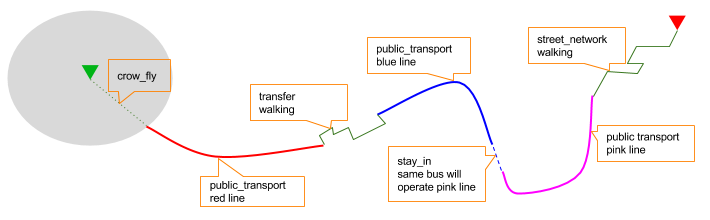
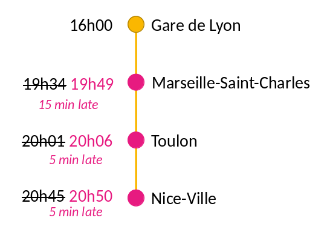
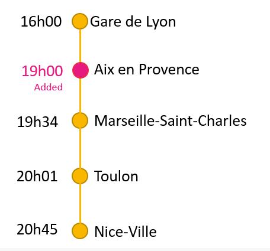

Getting started
Overview
Navitia (pronounce [navi-sia]) is the open API for building cool stuff with mobility data.
It provides the following services:
- multi-modal journeys computation
- line schedules
- next departures
- exploration of public transport data
- search & autocomplete on places
- and sexy things such as isochrones
Have a look at the examples below to learn what services we provide and how to use them.
Approach
Navitia is an open-source web API, initially built to provide traveler information on urban transportation networks.
Its main purpose is to provide day-to-day informations to travelers.
Over time, Navitia has been able to do way more, sometimes for technical and debuging purpose or because other functional needs fit quite well in what Navitia can do or just because it was quite easy and super cool.
Technically, Navitia is a HATEOAS API that returns JSON formated results.
Who's who
Navitia is instanciated and exposed publicly through api.navitia.io.
Developments on Navitia are lead by Hove (previously Kisio Digital and CanalTP).
Hove is a subsidiary of Keolis (itself a subsidiary of SNCF, French national railway company).
About "sandbox" coverage
First step
Your token is available on your navitia.io account page.
It sounds like "3b036afe-0110-4202-b9ed-99718476c2e0"
Get a token here https://navitia.io/inscription/. We need your mail to stay in touch when Navitia changes.
Second step
# You can use curl to request Navitia
$ curl 'https://api.navitia.io/v1/'
Go to the API https://api.navitia.io
The simpliest way is to use a web browser. Our humble opinion is that firefox browser and a json viewer extension like JSON Lite is a good setup.
Third step
# In a curl way, with our fake token
$ curl 'https://api.navitia.io/v1/coverage/sandbox/' -H 'Authorization: 3b036afe-0110-4202-b9ed-99718476c2e0'
Use the token: if you use a modern web browser, you only have to paste it in the user name area, with no password.
Or, in a simplier way, you can add your token in the address bar like:
See authentication section to find out more details on how to use your token when coding.
Then,
use the API! The easiest is probably to jump to Examples below.
At some point you will want to read transport public lexicon.
Navitia for humans
Wrappers
To help you in the building of your project, there are some wrappers implemented (by Hove or not) to query the API Navitia:
| Language / Framework | Plugin |
|---|---|
| PHP5 | https://github.com/hove-io/NavitiaComponent |
| Symfony 2 or 3 | https://github.com/hove-io/NavitiaBundle |
| Python | https://github.com/leonardbinet/navitia_client |
| Python | https://github.com/hove-io/navitia_python_wrapper |
About the data
The street network is extracted from OpenStreetMap. The public transport data are provided by networks that provide their timetables as open data. Some data improvements are achieved by Hove and are published back there https://navitia.opendatasoft.com.
Want to know if your city is in Navitia? Know if a special contributor is used? You can either search in datasets of the different coverages. Or use the filter provided on our data catalog https://navitia.opendatasoft.com.
Getting help
All available functions are documented in integration part. If you want to go further, there is an Swagger-openAPI documentation at https://api.navitia.io/v1/schema
A mailing list is available to ask questions or request new data integrations: navitia@googlegroups.com
In order to report bug and make feature requests please use our github navitia project https://github.com/hove-io/navitia/issues.
Stay tuned on twitter @navitia.
At last, we are present on the network matrix.org, channel #navitia:matrix.org.
Some examples
This chapter shows some usages with the minimal required arguments. However, this is not a reference and not all APIs nor arguments are shown.
Basics on the API request
# Web is too shiny: JSON, urlencode and curl forever!
$ curl 'https://api.navitia.io/v1/coverage/sandbox/stop_areas/stop_area%3ARAT%3ASA%3ABASTI/lines/line%3ARAT%3AM5/departures?count=4&depth=2&' -H 'Authorization: 3b036afe-0110-4202-b9ed-99718476c2e0'
A query to Navitia's API is divided in 4 parts, as highlighted by colors in a Navitia Playground example:
- Root url of the API, the address of the server.
Herehttps://api.navitia.io/v1/ - Path, used to filter the request and precise what is affected by the query. This filter is an intersection of multiple
key/value(logical AND).
Here/coverage/sandbox/stop_areas/stop_area:RAT:SA:BASTI/lines/line:RAT:M5/means we are looking for information on everything that is in the region "sandbox" and that is stricly related to both station "Bastille" and line "metro 5". - Endpoint, specifies what type of information is requested, so the feature. It can be a service, like journeys, isochrones, places or a collection of objects, like lines, stop_areas, etc.
Here
/departures?means we are requesting "next departures". - Parameters, used to specify any additional detail linked to the endpoint requested.
Here?count=4&depth=2&means we are requesting the next 4 departures and we want the response to be detailed to a depth of 2.
A quick exploration
$ curl 'https://api.navitia.io/v1/coverage' -H 'Authorization: 3b036afe-0110-4202-b9ed-99718476c2e0'
HTTP/1.1 200 OK
{
"start_production_date": "20140105",
"status": "running",
"shape": "POLYGON((-74.500997 40.344999,-74.500997 41.096999,-73.226 41.096999,-73.226 40.344999,-74.500997 40.344999))",
"id": "sandbox",
"end_production_date": "20140406"
}
navitia allows to dive into the public transport data.
To better understand how the API works let's ask the API the different main possibilities by simply querying the API endpoint: https://api.navitia.io/v1/
The links section of the answer contains the different possible interactions with the API.
As you can see there are several possibilities like for example coverage to navigate through the covered regions data or journeys to compute a journey.
Now let's see what interactions are possible with coverage:
This request will give you:
- in the
regionssection the list of covered regions - in the
linkssection the list of possible interactions with them
$ curl 'https://api.navitia.io/v1/coverage/sandbox/lines' -H 'Authorization: 3b036afe-0110-4202-b9ed-99718476c2e0'
HTTP/1.1 200 OK
{
"lines":[
{
"id":"line:RAT:M1",
"code":"1",
"name":"Château de Vincennes - La Défense",
"opening_time":"053000",
"closing_time":"013600",
"color":"F2C931",
"commercial_mode":{
"id":"commercial_mode:Metro",
"name":"Metro"
},
"physical_modes":[
{
"id":"physical_mode:Metro",
"name":"Métro"
}
],
"network":{
"id":"network:RAT:1",
"name":"RATP"
},
"routes":[
{
"id":"route:RAT:M1",
"name":"Château de Vincennes - La Défense",
"direction":{
"id":"stop_area:RAT:SA:DENFE",
"name":"La Défense Grande Arche (Puteaux)"
}
},
{
"id":"route:RAT:M12_R",
"name":"Mairie d'Issy - Front Populaire",
"direction":{
"id":"stop_area:RAT:SA:MISSY",
"name":"Mairie d'Issy (Vanves)"
}
}
]
}
]
}
In the links section there is for example this link: "href": "https://api.navitia.io/v1/coverage/{regions.id}/lines"
This link is about lines (according to its rel attribute) and is templated which means that it needs additional parameters.
The parameters are identified with the { } syntax.
In this case it needs a region id. This id can be found in the regions section.
To query for the public transport lines of New York we thus have to call: https://api.navitia.io/v1/coverage/us-ny/lines
Easy isn't it?
We could push the exploration further and:
- Where am I? (WGS 84 coordinates)
- https://api.navitia.io/v1/coord/2.377310;48.847002
- I'm on the "/fr-idf" coverage, at "20, rue Hector Malot in Paris, France"
- Services available on this coverage
- https://api.navitia.io/v1/coverage/fr-idf
- Let's take a look at the links at the bottom of the previous stream
- Networks available? (see what network is)
- https://api.navitia.io/v1/coverage/fr-idf/networks
- pwooo, many networks on this coverage ;)
- Is there any Metro lines or networks?
- there is an api for that. See pt_objects
- https://api.navitia.io/v1/coverage/fr-idf/pt_objects?q=metro
- Response contain one network, one mode, and many lines
- Let's try some filtering (see PT objects exploration)
- filter on the specific metro network ("id": "network:OIF:439" extracted from last request)
- https://api.navitia.io/v1/coverage/fr-idf/networks/network:OIF:439/
- physical modes managed by this network
- https://api.navitia.io/v1/coverage/fr-idf/networks/network:OIF:439/physical_modes
- metro lines
- https://api.navitia.io/v1/coverage/fr-idf/networks/network:OIF:439/physical_modes/physical_mode:Metro/lines
- By the way, what stuff are close to me?
- https://api.navitia.io/v1/coverage/fr-idf/coords/2.377310;48.847002/places_nearby
- or https://api.navitia.io/v1/coverage/fr-idf/coords/2.377310;48.847002/lines
- or https://api.navitia.io/v1/coverage/fr-idf/coords/2.377310;48.847002/stop_schedules
- or https://api.navitia.io/v1/coverage/fr-idf/coords/2.377310;48.847002/terminus_schedules
- or ...
Seek and search
What places have a name that start with 'eiff'
The /places API finds any object whose name matches the first letters of the query.
To find the objects that start with "tran" the request should be: https://api.navitia.io/v1/coverage/fr-idf/places?q=eiff
This API is fast enough to use it for autocompleting a user request.
What places are within 1000 meters
The /places_nearby API finds any object within a certain radius as a crow flies. This API is not accessible from the main endpoint but has to be applied on a stop point, an address, some coordinates,...
All objects around the coordinates of the Transamerica Pyramid can be fetched with the following request: https://api.navitia.io/v1/coverage/us-ca/coords/-122.402770;37.794682/places_nearby
We could, in the same fashion, ask for the objects around a particuliar stop area (stop_area:OSF:SA:CTP4025 for example): https://api.navitia.io/v1/coverage/us-ca/stop_areas/stop_area:OSF:SA:CTP4025/places_nearby
Optionally you can select what object types to return and change the radius.
About itinerary
A simple route computation
Let's find out how to get from the view point of the Golden Gate bridge to the Transamerica Pyramid in San Francisco.
We need to use the journeys API.
The coordinates of the view point are longitude = -122.4752, latitude = 37.80826 and the coordinates of the Transamercia Pyramid are longitude = -122.402770, latitude = 37.794682.
The coordinates are always in decimal degrees as WGS84 (also known as GPS coordinates). The coordinates are given to the API with the following format: longitute;latitude.
The arguments are the following:
from=-122.4752;37.80826to=-122.402770;37.794682Hence, the complete URL: https://api.navitia.io/v1/journeys?from=-122.4752;37.80826&to=-122.402770;37.794682.
This API has more options explained in the reference as:
Try it on Navitia playground using "datetime" and "datetime_represents" parameters)
The dates are given in the basic form of the ISO 8601 datetime format:
YYYYMMDDTHHMM. For example, if you want to compute a journey on friday, April 07 usedatetime=20170407T120000.To get the latest departure, you can query for journeys arriving before the end of the service using the
datetime_representsparameter
You can also change the traveler profile (to adapt the walking/biking/driving parts and comfort of journeys)
Forbid certain lines, routes or modes: for example you can forbid the line 5 and all lines using cable car mode. See /journeys section.
Using your token! You can try "real life" personalizations on Paris area)
- You can override traveler_type parameters by enabling biking, driving or bike sharing system (bss) in your area. For instance, you can allow bss (and walking since it's implicit with it) at the departure from Paris area
What stations can be reached in the next 20 minutes
The API can computes all the reachable stop points from an origin within a given maximum travel duration.
That's what we call an isochrone (see journeys section)
All the stop points that can be reached from the Transamerica Pyramid can be fetched with the following request: https://api.navitia.io/v1/coverage/us-ca/coords/-122.402770;37.794682/journeys?max_duration=1200
It returns for each destination stop point the earliest arrival and a link to the journey detail.
Authentication
4 ways to request Navitia
# using "headers"
$ curl 'https://api.navitia.io/v1/coverage' -H 'Authorization: 3b036afe-0110-4202-b9ed-99718476c2e0'
# using "users": don't forget ":" at the end of line!
$ curl https://api.navitia.io/v1/coverage -u 3b036afe-0110-4202-b9ed-99718476c2e0:
# using "straight URL"
$ curl https://3b036afe-0110-4202-b9ed-99718476c2e0@api.navitia.io/v1/coverage
Authentication is required to use navitia.io. When you register we will give you an authentication key that must accompany each API call you make.
Navitia.io uses Basic HTTP authentication for authentication, where the username is the key, and password remains empty.
For example, in a Curl way, you can request either (using the fake sandbox token):
curl 'https://api.navitia.io/v1/coverage' -H 'Authorization: 3b036afe-0110-4202-b9ed-99718476c2e0'
or
curl https://api.navitia.io/v1/coverage -u 3b036afe-0110-4202-b9ed-99718476c2e0:
(don't forget : after the key)
or
curl https://3b036afe-0110-4202-b9ed-99718476c2e0@api.navitia.io/v1/coverage
Journey planning
The multi-modal itinerary feature allows you to compute the best routes from point A to point B using all available means of travel, including: bus, train, subway, bike, public bike, walking, car, etc. This function returns a roadmap with specific instructions for a route based on available information, such as: time of departure and arrival, journey time, possible modes of transport, and walking distance.
In order to compute a journey, you may have to use these APIs (click on them for details):
- Places: autocomplete on geographical data to find the departure and destination points from an input text.
- Journeys: compute journeys from and to coordinates, stops, stations or administrative region
Next departures and arrivals
The "Next Departures" feature provides the next scheduled departures or arrivals for a specific mode of public transport (bus, tram, metro, train) at your selected stop, near coordinates, etc.
Try it on Navitia playground (click on "EXT" buttons to see times)
- use
terminus_schedulesif you want to display departures grouped by terminus (2 next departures for each terminus for example). Terminus are automaticily computed by Navitia
Try it on Navitia playground (click on "EXT" buttons to see times)
- use
stop_schedulesif you want to display departures grouped by route (2 next departures for each route for example). Compared to "terminus_schedules", routes are managed by the GTFS providers.
- use
departuresorarrivalsif you want to display a multi-route table (like big departure boards in train stations)
In order to display departures, you may have to use these APIs (click on them for details):
- Public transportation objects: List of the public transport objects of a region
- Stop Schedules, Terminus Schedules, Departures and Arrivals: Compute time tables for a given resource
See how disruptions affect the next departures in the real time section.
Timetables
The Timetables features gives you access to line schedules on public transport, allowing you to find the times public transport is expected at specific stops.
It returns a variety of differents informations, including: stop points in right order, times, accessibility informations, vehicle informations, etc.
In order to display line schedules, you may have to use these APIs (click on them for details):
- Public transportation objects: List of the public transport objects of a region
- Route Schedules and Stop Schedules: Compute time tables for a given resource
Places nearby
Try it on Navitia playground (click on "MAP" buttons to see places)
The Places Nearby feature displays the different transport options around a location - a GPS coordinate, or an address, for example.
Using OpenStreetMap data, this function also provides information about bicycle parking, public park schedules, and parking fees.
You can use these APIs (click on them for details):
- Coverage: List of the region covered by navitia
- Public transportation objects: Seek and search within the public transport objects of a region
- Places nearby: List of objects near an object or using longitude and latitude
- Stop Schedules, Departures and Arrivals: Compute time tables for a given resource
Explore transport
The Explore Transport feature lets you explore places, coordinates, bus stops, subway stations, etc. to navigate all the data available on the API (collection service).
If you want to play with Navitia at a hardcore gamer level, you may want to build some advanced requests: here is how to
You can use these APIs (click on them for details):
- Coverage: List of the region covered by navitia
- Public transportation objects: List of the public transport objects of a region
- Places and PT_objects: Search for data using autocomplete input.
Isochrones
Try it on Navitia playground (click on "MAP" buttons for "wow effect")
Whether using a specific set of coordinates or a general location, you can find places within your reach at a given time and their corresponding travel times, using a variety of transportation options. You can even specify the maximum amount of time you want to spare on travel and find the quickest way to reach your destination.
Isochrone computing exposes information under two formats:
- either Journeys service which provides a list with all the reachable stops at a given time from a potential destination with their respective arrival times, travel times and number of matches. Here is a fiddle example:
- or isochrones service which provides a multi-polygon stream in order to plate colors directly on a map, or to filter geocoded objects inside the polygon. Here is a fiddle example:
You can use these APIs (click on them for details):
- some Places requests: autocomplete on geographical data from an input text to find the isochrone starting point.
- Journeys: Compute all journeys from a departure point at a given time to every reachable point, and returns a list of all reachable points, ordered by time to reach.
- isochrones: Compute all journeys from a departure point at a given time to every reachable point, and returns multiple geoJson ready to be displayed on map. This service is currently in beta.
Interface
The base URL for navitia.io is: https://api.navitia.io/v1/
We aim to implement HATEOAS concept with Navitia.
Every resource returns a response containing a links object, a paging object, and the requested objects, following hypermedia principles. That's lots of links. Links allow you to know all accessible uris and services for a given point.
Templated URL
From every object collection
#first request
$ curl 'https://api.navitia.io/v1/coverage/sandbox/lines' -H 'Authorization: 3b036afe-0110-4202-b9ed-99718476c2e0'
#response
HTTP/1.1 200 OK
#first line is like:
{
"lines": [
{
"id": "line:RAT:M1",
"code": "1",
"name": "Château de Vincennes - La Défense",
"...": "..."
},
{...}
],
...,
#and a templated link from the example above:
"links": [
{
"href": "https://api.navitia.io/v1/coverage/sandbox/lines/{lines.id}/stop_schedules",
"rel": "stop_schedules",
"templated": true
},
{...}
]
}
#you can then request for "stop_schedules" service using templating
#be careful, without any filter, the response can be huge
#second request
#{line.id} has to be replaced by "line:RAT:M1"
$ curl 'https://api.navitia.io/v1/coverage/sandbox/lines/line:RAT:M1/stop_schedules' -H 'Authorization: 3b036afe-0110-4202-b9ed-99718476c2e0'
#here is a smarter request for a line AND a stop_area
$ curl 'https://api.navitia.io/v1/coverage/sandbox/lines/line:RAT:M1/stop_areas/stop_area:RAT:SA:PLROY/stop_schedules' -H 'Authorization: 3b036afe-0110-4202-b9ed-99718476c2e0'
Under some link sections, you will find a "templated" property.
If "templated" is true, then you will have to format the link with your right id as describe in the example. In order to do that, you will have to
- take the id from the object you want to get the linked service
- replace {lines.id} in the url as the example
Inner references
#You may find "disruptions" link, as
{
"internal": true,
"type": "disruption",
"id": "edc46f3a-ad3d-11e4-a5e1-005056a44da2",
"rel": "disruptions",
"templated": false
}
Some link sections holds disruption links. These links are templated.
That means:
- inside the self stream ("internal": true)
- you will find a disruptions section ("rel": "disruptions")
- containing some disruptions objects ("type": "disruption")
- where you can find the details of your object ("id": "edc46f3a-ad3d-11e4-a5e1-005056a44da2").
Paging
#Retrieving lines collection
$ curl 'https://api.navitia.io/v1/coverage/sandbox/lines' -H 'Authorization: 3b036afe-0110-4202-b9ed-99718476c2e0'
#You can find "paging" informations, as
{
"pagination": {
"items_on_page": 25
"items_per_page": 25,
"start_page": 1,
"total_result": 1921,
},
}
#You can also find "paging" links, prebuilt in the link section
{
{
"href": "https://api.navitia.io/v1/coverage/demo/lines?start_page=0",
"templated": false
"type": "previous",
},
{
"href": "https://api.navitia.io/v1/coverage/demo/lines?start_page=2",
"templated": false
"type": "next",
},
{
"href": "https://api.navitia.io/v1/coverage/demo/lines?start_page=76",
"templated": false
"type": "last",
},
{
"href": "https://api.navitia.io/v1/coverage/demo/lines",
"templated": false
"type": "first",
}
}
Every Navitia response contains a paging object
| Key | Type | Description |
|---|---|---|
| items_per_page | int | Number of items per page |
| items_on_page | int | Number of items on this page |
| start_page | int | The page number |
| total_result | int | Total number of items for this request |
You can navigate through a response using 2 parameters
| Parameter | Type | Description |
|---|---|---|
| start_page | int | The page number |
| count | int | Number of items per page |
Objects order
Unless specified, objects lists are not sorted and stability of objects' order is not guaranteed.
This is also true for the ordering of the attributes of objects.
Examples of sorted objects tables:
- journeys in a
/journeysresponse /departuresand/arrivals/stop_schedules/terminus_schedules- stop_points in
/routes/{route_id}?depth=3 /places_nearby/places
Examples of unsorted responses:
- stop_points in
/lines/{line_id}/stop_points - pretty much everything else...
Objects attributes
Like almost any API, objects are subject to adaptations.
Please be warned that we allow Navitia to add new attributes to objects, and it will never be considered a breaking change.
We also allow Navitia to add values to enum, so be prepared to that. For example section's type of journeys are regularly evolving.
Lifetime of id
The way id (or uri) of an object is generated is not garanteed stable, nor are the data processed. So we advise to limit to the minimum storing ids/uris of objects. We recommend to use as much as possible a previous call to Places and PT_objects. Also, be resilient if one of those ids/uris disappears.
API catalog
Coverage
Also known as /coverage service.
You can easily navigate through regions covered by navitia.io, with the coverage api. The shape of the region is provided in GeoJSON.
In Navitia, a coverage is a combination of multiple datasets provided by different contributors (typically data provided by a transport authority in GTFS format). The combination of datasets used by a coverage is arbitrarily determined but we try to use something that makes sense and has a reasonnable amount of data (country).
The only arguments are the ones of paging.
Accesses
| url | Result |
|---|---|
/coverage |
List of the areas covered by navitia |
/coverage/{region_id} |
Information about a specific region |
/coverage/{lon;lat} |
Information about a specific region, navitia guesses the region from coordinates |
Fields
| Field | Type | Description |
|---|---|---|
| id | string | Identifier of the coverage |
| name | string | Name of the coverage |
| shape | string | GeoJSON of the shape of the coverage |
| dataset_created_at | iso-date-time | Creation date of the dataset |
| start_production_date | iso-date | Beginning of the production period. We only have data on this production period |
| end_production_date | iso-date | End of the production period. We only have data on this production period |
Production period
The production period is the validity period of the coverage's data.
There is no data outside this production period.
This production period cannot exceed one year.
Datasets
Very simple endpoint providing the sets of data that are used in the given coverage.
Those datasets (typically from transport authority in GTFS format), each provided by a unique contributor are forming a coverage.
Contributor providing the dataset is also provided in the response. Very useful to know all the data that form a coverage.
The only arguments are the ones of paging.
Accesses
| url | Result |
|---|---|
coverage/{region_id}/datasets |
List of the datasets of a specific region |
coverage/{region_id}/datasets/{dataset_id} |
Information about a specific dataset |
Contributors
Very simple endpoint providing the contributors of data for the given coverage.
A contributor is a data provider (typically a transport authority), and can provide multiple datasets. For example, the contributor Italian Railways will provide a dataset for the national train and some others for the regional trains. We will try to put them in the same coverage so that we assemble them in the same journey search, using both.
Very usefull to know which contributors are used in the datasets forming a coverage.
The only arguments are the ones of paging.
Accesses
| url | Result |
|---|---|
coverage/{region_id}/contributors |
List of the contributors of a specific region |
coverage/{region_id}/contributors/{dataset_id} |
Information about a specific contributor |
Inverted geocoding
#request
$ curl 'https://api.navitia.io/v1/coords/2.37705;48.84675' -H 'Authorization: 3b036afe-0110-4202-b9ed-99718476c2e0'
#response where you can find the right Navitia coverage, and a useful label
HTTP/1.1 200 OK
{
"regions": [
"sandbox"
],
"address": {
"id": "2.37705;48.84675",
"label": "20 Rue Hector Malot (Paris)",
"...": "..."
}
}
in this example, the coverage id is "regions": ["sandbox"] so you can ask Navitia on accessible local mobility services:
#request
$ curl 'https://api.navitia.io/v1/coverage/sandbox' -H 'Authorization: 3b036afe-0110-4202-b9ed-99718476c2e0'
#response
HTTP/1.1 200 OK
{
"regions": [{
"status": "running",
"start_production_date": "20160101","end_production_date": "20160831",
"id": "sandbox"
}],
"links": [
{"href": "https://api.navitia.io/v1/coverage/sandbox/coords"},
{"href": "https://api.navitia.io/v1/coverage/sandbox/places"},
{"href": "https://api.navitia.io/v1/coverage/sandbox/networks"},
{"href": "https://api.navitia.io/v1/coverage/sandbox/physical_modes"},
{"href": "https://api.navitia.io/v1/coverage/sandbox/companies"},
{"href": "https://api.navitia.io/v1/coverage/sandbox/commercial_modes"},
{"href": "https://api.navitia.io/v1/coverage/sandbox/lines"},
{"href": "https://api.navitia.io/v1/coverage/sandbox/routes"},
{"href": "https://api.navitia.io/v1/coverage/sandbox/stop_areas"},
{"href": "https://api.navitia.io/v1/coverage/sandbox/stop_points"},
{"href": "https://api.navitia.io/v1/coverage/sandbox/line_groups"},
{"href": "https://api.navitia.io/v1/coverage/sandbox/connections"},
{"href": "https://api.navitia.io/v1/coverage/sandbox/vehicle_journeys"},
{"href": "https://api.navitia.io/v1/coverage/sandbox/poi_types"},
{"href": "https://api.navitia.io/v1/coverage/sandbox/pois"},
{"href": "https://api.navitia.io/v1/coverage/sandbox/disruptions"},
{"href": "https://api.navitia.io/v1/coverage/sandbox/datasets"},
{"href": "https://api.navitia.io/v1/coverage/sandbox/line_groups"},
{"href": "https://api.navitia.io/v1/coverage/sandbox/trips"},
{"href": "https://api.navitia.io/v1/coverage/sandbox/"}
]
}
Also known as /coords service.
Very simple service: you give Navitia some coordinates, it answers you
- your detailed postal address
- the right Navitia "coverage" which allows you to access to all known local mobility services
Accesses
| url | Result |
|---|---|
places/{lon;lat} |
Detailed address point |
/places/{id} |
Information about places |
coverage/{lon;lat}/places/{lon;lat} |
Detailed address point, navitia guesses the region from coordinates |
coverage/{lon;lat}/places/{id} |
Information about places, navitia guesses the region from coordinates |
coverage/{region_id}/places/{lon;lat} |
Detailed address point |
coverage/{region_id}/places/{id} |
Information about places |
You can also combine /coords with other filter as:
- get POIs near a coordinate
- get specific POIs near a coordinate
Public Transportation Objects exploration
curl 'https://api.navitia.io/v1/coverage/sandbox/pt_objects?q=metro%201' -H 'Authorization: 3b036afe-0110-4202-b9ed-99718476c2e0'
HTTP/1.1 200 OK
{
"pt_objects":[
{
"id":"line:RAT:M1",
"name":"RATP Metro 1 (Château de Vincennes - La Défense)",
"embedded_type":"line",
"line":{
"id":"line:RAT:M1",
"name":"Château de Vincennes - La Défense",
"code":"1",
"...": "..."
}
},
{
"id":"line:RAT:M11",
"name":"RATP Metro 11 (Mairie des Lilas - Châtelet)"
"embedded_type":"line",
"line":{
"...": "..."
},
},
{
"id":"line:RAT:M12",
"name":"RATP Metro 12 (Mairie d'Issy - Front Populaire)",
"embedded_type":"line",
"line":{
"...": "..."
}
},
{"...": "..."},
{"...": "..."}
]
}
Also known as /networks, /lines, /stop_areas... services.
Once you have selected a region, you can explore the public transportation objects easily with these APIs. You just need to add at the end of your URL a collection name to see every objects within a particular collection. To see an object detail, add the id of this object at the end of the collection's URL. The paging arguments may be used to paginate results.
Accesses
| url | Result |
|---|---|
/coverage/{region_id}/{collection_name} |
Collection of objects of a region |
/coverage/{region_id}/{collection_name}/{object_id} |
Information about a specific object |
/coverage/{lon;lat}/{collection_name} |
Collection of objects of a region, navitia guesses the region from coordinates |
/coverage/{lon;lat}/{collection_name}/{object_id} |
Information about a specific object, navitia guesses the region from coordinates |
Collections
- networks
- lines
- routes
- stop_points
- stop_areas
- commercial_modes
- physical_modes
- companies
- vehicle_journeys
- disruptions
Shared parameters
depth
You are looking for something, but Navitia doesn't output it in your favorite endpoint?
You want to request more from navitia feed?
You are receiving feeds that are too important and too slow with low bandwidth?
You would like Navitia to serve GraphQL but it is still not planned?
Feeds from endpoint might miss informations, but this tiny depth= parameter can
expand Navitia power by making it more wordy. Or lighter if you want it.
Here is some examples around "metro line 1" from the Parisian network:
- Get "line 1" id
- https://api.navitia.io/v1/coverage/sandbox/pt_objects?q=metro%201 The id is "line:RAT:M1"
- Get routes for this line
- https://api.navitia.io/v1/coverage/sandbox/lines/line:RAT:M1/routes
Default depth is
depth=1
- https://api.navitia.io/v1/coverage/sandbox/lines/line:RAT:M1/routes
Default depth is
- Want to get a tiny response? Just add
depth=0- https://api.navitia.io/v1/coverage/sandbox/lines/line:RAT:M1/routes?depth=0 The response is lighter (parent lines disappear for example)
- Want more informations, just add
depth=2- https://api.navitia.io/v1/coverage/sandbox/lines/line:RAT:M1/routes?depth=2 The response is a little more verbose (some geojson can appear in response when using your open data token)
- Wanna fat more informations, let's try
depth=3- https://api.navitia.io/v1/coverage/sandbox/lines/line:RAT:M1/routes?depth=3 Big response: all stop_points are shown
- Wanna spam the internet bandwidth? Try
depth=42- No. There is a technical limit with
depth=3
- No. There is a technical limit with
odt level
- Type: String
- Default value: all
- Warning: works ONLY with /lines collection...
It allows you to request navitia for specific pickup lines. It refers to the odt section. "odt_level" can take one of these values:
- all (default value): no filter, provide all public transport lines, whatever its type
- scheduled: provide only regular lines (see the odt section)
- with_stops: to get regular, "odt_with_stop_time" and "odt_with_stop_point" lines.
- You can easily request route_schedule and stop_schedule with these kind of lines.
- Be aware of "estimated" stop times
- zonal: to get "odt_with_zone" lines with non-detailed journeys
For example
https://api.navitia.io/v1/coverage/fr-nw/networks/network:lila/lines
https://api.navitia.io/v1/coverage/fr-nw/networks/network:irigo/lines?odt_level=scheduled
distance
- Type: Integer
- Default value: 200
If you specify coords in your filter, you can modify the radius used for the proximity search.
https://api.navitia.io/v1/coverage/fr-idf/coords/2.377310;48.847002/stop_schedules?distance=500
headsign
- Type: String
If given, add a filter on the vehicle journeys that has the given value as headsign (on vehicle journey itself or at a stop time).
Examples:
- https://api.navitia.io/v1/coverage/fr-idf/vehicle_journeys?headsign=PADO
- https://api.navitia.io/v1/coverage/fr-idf/stop_areas?headsign=PADO
since / until
- Type: iso-date-time
To be used only on "vehicle_journeys" and "disruptions" collection, to filter on a period. Both parameters "until" and "since" are optional.
For vehicle_journeys, "since" and "until" are associated with the data_freshness parameter (defaults to base_schedule): see the realtime section.
Example:
- Getting every active (only base_schedule) New Jersey vehicles between 12h00 and 12h01, on a specific date https://api.navitia.io/v1/coverage/us-ny/networks/network:newjersey/vehicle_journeys?since=20170407T120000&until=20170407T120100
- Getting every active (according to realtime information) New Jersey vehicles between 12h00 and 12h01, on a specific date https://api.navitia.io/v1/coverage/us-ny/networks/network:newjersey/vehicle_journeys?since=20170407T120000&until=20170407T120100&data_freshness=realtime
- Getting every active disruption on "Bretagne" for a specific date https://api.navitia.io/v1/coverage/fr-bre/disruptions?since=20170206000000&until=20170206235959
disable_geojson
By default geojson part of an object are returned in navitia's responses, this parameter allows you to remove them, it's useful when searching lines that you don't want to display on a map.
Examples:
disable_disruption
By default disruptions are also present in navitia's responses on apis "PtRef", "pt_objects" and "places_nearby". This parameter allows you to remove them, reducing the response size.
Examples:
Filter
It is possible to apply a filter to the returned collection, using "filter" parameter. If no object matches the filter, a "bad_filter" error is sent. If filter can not be parsed, an "unable_to_parse" error is sent.
{collection}.has_code
#for any pt_object request, as this one:
$ curl 'https://api.navitia.io/v1/coverage/sandbox/stop_areas' -H 'Authorization: 3b036afe-0110-4202-b9ed-99718476c2e0'
#you can find codes on every pt_object, like:
HTTP/1.1 200 OK
{
"stop_areas": [
{
"codes" :[
{
"type": "external_code",
"value": "RATCAMPO"
},
{
"type" : "source",
"value" : "CAMPO"
}
]
"...": "...",
},
{...}
]
#you can request for objects with a specific code
#for example, you can get this stoparea, having a "source" code "CAMPO"
#by using parameter "filter=stop_area.has_code(source,CAMPO)" like:
$ curl 'https://api.navitia.io/v1/coverage/sandbox/stop_areas?filter=stop_area.has_code(source,CAMPO)' -H 'Authorization: 3b036afe-0110-4202-b9ed-99718476c2e0'
Every object managed by Navitia comes with its own list of ids. You will find some source ids, merge ids, etc. in "codes" list in json responses. Be careful, these codes may not be unique. The navitia id is the only unique id.
You may have to request an object by one of these ids, in order to call an external service for example.
The filter format is filter={collection_name}.has_code({code_type},{code_value})
Examples:
- https://api.navitia.io/v1/coverage/fr-sw/stop_points?filter=stop_point.has_code(source,5852)
- https://api.navitia.io/v1/coverage/fr-sw/stop_areas?filter=stop_area.has_code(gtfs_stop_code,1303)
- https://api.navitia.io/v1/coverage/fr-sw/lines?filter=line.has_code(source,11821949021891619)
line.code
It allows you to request navitia objects referencing a line whose code is the one provided, especially lines themselves and routes.
Examples:
- https://api.navitia.io/v1/coverage/fr-idf/lines?filter=line.code=4
- https://api.navitia.io/v1/coverage/fr-idf/routes?filter=line.code="métro 347"
Few exploration examples
#request
$ curl 'https://api.navitia.io/v1/coverage/sandbox/physical_modes' -H 'Authorization: 3b036afe-0110-4202-b9ed-99718476c2e0'
#response
HTTP/1.1 200 OK
{
"links": [
"..."
],
"pagination": {
"..."
},
"physical_modes": [
{
"id": "physical_mode:Bus",
"name": "Bus"
},
{
"id": "physical_mode:Metro",
"name": "Métro"
},
"..."
]
}
Other examples
- Network list
- Physical mode list
- Line list
- Line list for one mode
You will find lots of more advanced example in a quick exploration chapter
Autocomplete on Public Transport objects
# Search objects of type 'line' or 'route' containing 'metro 4'
#request
$ curl 'https://api.navitia.io/v1/coverage/sandbox/pt_objects?q=metro%204&type\[\]=line&type\[\]=route' -H 'Authorization: 3b036afe-0110-4202-b9ed-99718476c2e0'
#response
HTTP/1.1 200 OK
{
"pt_objects": [
{
"embedded_type": "line",
"line": {...},
"id": "line:RAT:M4",
"name": "RATP Metro 4 (Porte de Clignancourt - Mairie de Montrouge)"
},
],
"links" : [...],
}
Also known as /pt_objects service.
This endpoint allows you to search in public transport objects using their names. It's a kind of magical autocomplete on public transport data. It returns a collection of pt_object.
How does it works
Different kinds of objects can be returned (sorted as):
- network
- commercial_mode
- line
- route
- stop_area
- stop_point
Here is a typical use case. A traveler has to find a line between the 1500 lines around Paris.
Examples
User could type one of the following without any filters:
Traveler input "bob":
- network : "bobby network"
- line : "bobby bus 1"
- line : "bobby bus 2"
- route : "bobby bus 1 to green"
- route : "bobby bus 1 to rose"
- route : "bobby bus 2 to yellow"
- stop_area : "...
Traveler input "bobby met":
- line : "bobby metro 1"
- line : "bobby metro 11"
- line : "bobby metro 2"
- line : "bobby metro 3"
- route : "bobby metro 1 to Martin"
- route : "bobby metro 1 to Mahatma"
- route : "bobby metro 11 to Marcus"
- route : "bobby metro 11 to Steven"
- route : "...
Traveler input: "bobby met 11" or "bobby metro 11":
- line : "bobby metro 11"
- route : "bobby metro 11 to Marcus"
- route : "bobby metro 11 to Steven"
Access
# Search objects of type 'network' containing 'RAT'
curl 'https://api.navitia.io/v1/coverage/sandbox/pt_objects?q=RAT&type\[\]=network' -H 'Authorization: 3b036afe-0110-4202-b9ed-99718476c2e0'
HTTP/1.1 200 OK
{
"pt_objects":[
{
"id":"network:RAT:1",
"name":"RATP",
"embedded_type":"network",
"network":{
"id":"network:RAT:1",
"name":"RATP"
}
}
]
}
| url | Result |
|---|---|
/coverage/{region_id}/{resource_path}/pt_objects |
List of public transport objects |
Parameters
| Required | Name | Type | Description | Default value |
|---|---|---|---|---|
| yep | q | string | The search term | |
| nop | type[] | array of string | Type of objects you want to query It takes one the following values: [network, commercial_mode, line, route, stop_area, stop_point] |
[network, commercial_mode, line, route, stop_area] |
| nop | disable_disruption | boolean | Remove disruptions from the response | False |
| nop | depth | int | Json response depth | 1 |
| nop | filter | string | Use to filter returned objects. for example: network.id=sncf |
Autocomplete on geographical objects
#request
$ curl 'https://api.navitia.io/v1/coverage/sandbox/places?q=rue' -H 'Authorization: 3b036afe-0110-4202-b9ed-99718476c2e0'
#response
HTTP/1.1 200 OK
{
"places": [
{
"embedded_type": "stop_area",
"stop_area": {...},
"id": "stop_area:RAT:SA:RDBAC",
"name": "Rue du Bac (Paris)"
},
...
],
"links" : [...],
}
Also known as /places service.
This endpoint allows you to search in all geographical objects using their names, returning a place collection.
It is very useful to make some autocomplete stuff ie to understand the user input even if he has mittens.
Differents kind of objects can be returned (sorted as):
- administrative_region
- stop_area
- poi
- address
- stop_point (appears only if specified, using
&type[]=stop_pointfilter)
Access
| url | Result |
|---|---|
/coverage/{region_id}/places |
List of geographical objects within a coverage |
/places |
Beta: List of geographical objects within Earth |
Parameters
| Required | Name | Type | Description | Default value |
|---|---|---|---|---|
| yep | q | string | The search term | |
| nop | type[] | array of string | Type of objects you want to query It takes one the following values: [stop_area, address, administrative_region, poi, stop_point] |
[stop_area, address, poi, administrative_region] |
| nop | Deprecated. Filters on shape are now possible straight in user account | |||
| nop | disable_geojson | boolean | remove geojson from the response | False |
| nop | depth | int | Json response depth | 1 |
| nop | from | string | Coordinates longitude;latitude used to prioritize the objects around this coordinate. Note this parameter will be taken into account only if the autocomplete's backend can handle it |
Places nearby
Try it on Navitia playground (click on "MAP" buttons to see places)
#request
$ curl 'https://api.navitia.io/v1/coverage/sandbox/stop_areas/stop_area:RAT:SA:CAMPO/places_nearby' -H 'Authorization: 3b036afe-0110-4202-b9ed-99718476c2e0'
#response
HTTP/1.1 200 OK
{
"places_nearby": [
{
"embedded_type": "stop_point",
"stop_point": {...},
"distance": "0",
"quality": 0,
"id": "stop_point:RAT:SP:CAMPO2",
"name": "Campo-Formio (Paris)"
},
....
}
Also known as /places_nearby service.
This endpoint allows you to search for public transport objects that are near another object, or nearby coordinates, returning a places collection.
Accesses
| url | Result |
|---|---|
/coverage/{lon;lat}/coords/{lon;lat}/places_nearby |
List of objects near the resource, navitia guesses the region from coordinates |
/coord/{lon;lat}/places_nearby |
List of objects near the resource without any region id (same result as above) |
/coverage/{region_id}/coords/{lon;lat}/places_nearby |
List of objects near a coordinate |
/coverage/{region_id}/{resource_path}/places_nearby |
List of objects near the resource |
Parameters
| Required | name | Type | Description | Default value |
|---|---|---|---|---|
| nop | distance | int | Distance range in meters | 500 |
| nop | type[] | array of string | Type of objects you want to query | [stop_area, stop_point, poi] |
| nop | admin_uri[] | array of string | If filled, will filter the search within the given admin uris | |
| nop | filter | string | Use to filter returned objects. for example: places_type.id=theater | |
| nop | disable_geojson | boolean | Remove geojson from the response | False |
| nop | disable_disruption | boolean | Remove disruptions from the response | False |
| nop | count | int | Elements per page | 10 |
| nop | depth | int | Json response depth | 1 |
| nop | start_page | int | The page number (cf the paging section) | 0 |
| nop | add_poi_infos[] | enum | Activate the output of additional infomations about the poi. For example, parking availability (BSS, car parking etc.) in the pois of response. Pass add_poi_infos[]=none& or add_poi_infos[]=& (empty string) to deactivate all. |
[bss_stands, car_park] |
Filters can be added:
- request for the city of "Paris" on fr-idf
- then pois nearby this city
- and then, let's catch every parking around
- "distance=10000" Paris is not so big
- "type[]=poi" to take pois only
- "filter=poi_type.id=poi_type:amenity:parking" to get parking
- "count=100" for classic pagination (to get the 100 nearest ones)
- https://api.navitia.io/v1/coverage/fr-idf/places/admin:7444/places_nearby?distance=10000&count=100&type[]=poi&filter=poi_type.id=poi_type:amenity:parking
The results are sorted by distance.
Journeys
#request
$ curl 'https://api.navitia.io/v1/coverage/sandbox/journeys?from=2.3749036;48.8467927&to=2.2922926;48.8583736' -H 'Authorization: 3b036afe-0110-4202-b9ed-99718476c2e0'
#response
HTTP/1.1 200 OK
{
"tickets": [],
"links": [...],
"journeys": [
{
"fare": {...},
"status": "",
"tags": [],
"type": "comfort",
"nb_transfers": 0,
"duration": 2671,
"requested_date_time": "20160613T133748",
"departure_date_time": "20160613T133830",
"arrival_date_time": "20160613T142301",
"calendars": [...],
"co2_emission": {"unit": "gEC", "value": 24.642},
"sections": [
{
"from": {... , "name": "Rue Abel"},
"to": {... , "name": "Bercy (Paris)"},
"arrival_date_time": "20160613T135400",
"departure_date_time": "20160613T133830",
"duration": 930,
"type": "street_network",
"mode": "walking",
"geojson": {...},
"path": [...],
"links": []
},{
"from": {... , "name": "Bercy (Paris)"},
"to": {... , "name": "Bir-Hakeim Tour Eiffel (Paris)"},
"type": "public_transport",
"display_informations": {
"direction": "Charles de Gaulle — Étoile (Paris)",
"code": "6",
"color": "79BB92",
"physical_mode": "M?tro",
"headsign": "Charles de Gaulle Etoile",
"commercial_mode": "Metro",
"label": "6",
"text_color": "000000",
"network": "RATP"},
"departure_date_time": "20160613T135400",
"arrival_date_time": "20160613T141500",
"base_arrival_date_time": "20160613T141500",
"base_departure_date_time": "20160613T135400",
"duration": 1260,
"additional_informations": ["regular"],
"co2_emission": {"unit": "gEC", "value": 24.642},
"geojson": {...},
"stop_date_times": [
{
"stop_point": {... , "label": "Bercy (Paris)"},
"arrival_date_time": "20160613T135400",
"departure_date_time": "20160613T135400",
"base_arrival_date_time": "20160613T135400",
"base_departure_date_time": "20160613T135400"
},
{...}
]
},
{
"from": {... , "name": "Bir-Hakeim Tour Eiffel (Paris)" },
"to": {... , "name": "Allée des Refuzniks"},
"arrival_date_time": "20160613T142301",
"departure_date_time": "20160613T141500",
"duration": 481,
"type": "street_network",
"mode": "walking",
"geojson": {...},
"path": [...],
}]
},
{...},
{...}],
"disruptions": [],
"notes": [],
"feed_publishers": [
{
"url": "",
"id": "sandbox",
"license": "",
"name": ""
}],
"exceptions": []
}
Also known as /journeys service. This api computes journeys or isochrone tables.
There are two ways to access to this service: journeys from point to point, or isochrones from a single point to every point.
Accesses
| url | Result |
|---|---|
/journeys |
List of journeys from wherever land |
/coverage/{region_id}/journeys |
List of journeys on a specific coverage |
/coverage/{a_path_to_resource}/journeys |
Isochrone from a specific coverage |
Requesting a single journey
The most used way to access to this service is to get the /journeys api endpoint.
Here is the structure of a standard journey request:
Context object provides the current_datetime, useful to compute waiting time when requesting Navitia without a datetime.
In the examples, positions are given by coordinates and no network is specified. However when no coordinates are provided, you need to provide on what region you want to request as https://api.navitia.io/v1/coverage/us-ca/journeys?from=-122.4752;37.80826&to=-122.402770;37.794682
The list of regions covered by navitia is available through coverage.
Requesting an isochrone
If you want to retreive every possible journey from a single point at a time, you can request as follow:
https://api.navitia.io/v1/{a_path_to_resource}/journeys
It will retrieve all the journeys from the resource (in order to make isochrone tables).
The isochrones service exposes another response structure, which is simpler, for the same data.
Disruptions
By default, Navitia only computes journeys without their associated disruption(s), meaning that the journeys in the response will be based on the theoretical schedules. The disruption present in the response is for information only.
In order to get an "undisrupted" journey (consider all disruptions during journey planning), you just have to add a &data_freshness=realtime parameter (or use the bypass_disruptions link from response).
In a journey's response, different disruptions may have different meanings.
Each journey has a status attribute that indicates the actual effect affecting pick-up and drop-off used by
the journey (no matter the effects of the disruptions attached to the journey).
A journey using a stop-time pick-up (or drop-off) that is deleted in realtime will have a NO_SERVICE status.
A journey using a stop-time pick-up (or drop-off) that is added in realtime will have a MODIFIED_SERVICE status.
A journey using a stop-time pick-up (or drop-off) that is early or late in realtime will have a SIGNIFICANT_DELAYS status.
All other journeys will have an empty status.
Disruptions are on the sections, the ones that impact the journey are in the sections's display_informations links (sections[].display_informations.links[]).
You might also have other disruptions in the response. They don't directly impact the journey, but might affect them.
For example, some intermediate stops of a section can be disrupted, it doesn't prevent the journey from being realised but modifies it.
These disruptions won't be on the display_informations of the sections or used in the journey's status.
See how disruptions affect a journey in the real time section.
Main parameters
| Required | Name | Type | Description | Default value |
|---|---|---|---|---|
| nop | from | id | The id of the departure of your journey. If none are provided an isochrone is computed. Should be different than to or no journey will be computed. |
|
| nop | to | id | The id of the arrival of your journey. If none are provided an isochrone is computed. Should be different than from or no journey will be computed. |
|
| nop | datetime | iso-date-time | Date and time to go. Note: the datetime must be in the coverage's publication period |
now |
| nop | datetime_represents | string | Can be departure or arrival.If departure, the request will retrieve journeys starting after datetime.If arrival it will retrieve journeys arriving before datetime. |
departure |
| nop | traveler_type | enum | Define speeds and accessibility values for different kind of people. Each profile also automatically determines appropriate first and last section modes to the covered area. Note: this means that you might get car, bike, etc fallback routes even if you set forbidden_uris[]! You can overload all parameters (especially speeds, distances, first and last modes) by setting all of them specifically.We advise that you don't rely on the traveler_type's fallback modes ( first_section_mode[] and last_section_mode[]) and set them yourself.Enum values:
|
|
| nop | data_freshness | enum | Define the freshness of data to use to compute journeys
you can get disrupted journeys in the response. You can then display the disruption message to the traveler and make a realtime request to get a new "undisrupted" solution (considering all disruptions during journey planning). |
base_schedule |
| nop | forbidden_uris[] | id | If you want to avoid lines, modes, networks, etc. Note: the forbidden_uris[] concern only the public transport objects. You can't for example forbid the use of the bike with them, you have to set the fallback modes for this (first_section_mode[] and last_section_mode[]) |
|
| nop | allowed_id[] | id | If you want to use only a small subset of the public transport objects in your solution. The constraint intersects with forbidden_uris[]. For example, if you ask for allowed_id[]=line:A&forbidden_uris[]=physical_mode:Bus, only vehicles of the line A that are not buses will be used. |
everything |
| nop | first_section_mode[] | array of string | Force the first section mode if the first section is not a public transport one. It takes the following values: walking, car, bike, bss, ridesharing, taxi.It's an array, you can give multiple modes. See Ridesharing and Taxi sections for more details on these modes. bss stands for bike sharing system.Note: choosing bss implicitly allows the walking mode since you might have to walk to the bss station.Note 2: The parameter is inclusive, not exclusive, so if you want to forbid a mode, you need to add all the other modes. Eg: If you never want to use a car, you need: first_section_mode[]=walking&first_section_mode[]=bss&first_section_mode[]=bike&last_section_mode[]=walking&last_section_mode[]=bss&last_section_mode[]=bike |
walking |
| nop | last_section_mode[] | array of string | Same as first_section_mode but for the last section | walking |
| nop | language | enum | Language for path guidance in walking sections. Enum values:
|
|
| fr-FR | ||||
| nop | depth | int | Json response depth | 1 |
Other parameters
| Required | Name | Type | Description | Default value |
|---|---|---|---|---|
| nop | max_duration_to_pt | int | Maximum allowed duration to reach the public transport (same limit used before and after public transport). Use this to limit the walking/biking part. Unit is seconds |
30*60 s |
| nop | walking_speed | float | Walking speed for the fallback sections Speed unit must be in meter/seconds |
1.12 m/s (4 km/h) Yes, man, they got the metric system |
| nop | bike_speed | float | Biking speed for the fallback Speed unit must be in meter/seconds |
4.1 m/s (14.7 km/h) |
| nop | bss_speed | float | Speed while using a bike from a bike sharing system for the fallback sections Speed unit must be in meter/seconds |
4.1 m/s (14.7 km/h) |
| nop | car_speed | float | Driving speed for the fallback sections Speed unit must be in meter/seconds |
16.8 m/s (60 km/h) |
| nop | min_nb_journeys | non-negative int | Minimum number of different suggested journeys More in multiple_journeys |
|
| nop | max_nb_journeys | positive int | Maximum number of different suggested journeys More in multiple_journeys |
|
| nop | count | int | Fixed number of different journeys More in multiple_journeys |
|
| nop | max_nb_transfers | int | Maximum number of transfers in each journey | 10 |
| nop | min_nb_transfers | int | Minimum number of transfers in each journey | 0 |
| nop | max_duration | int | If datetime represents the departure of the journeys requested, then the last public transport section of all journeys will end before datetime + max_duration.If datetime represents the arrival of the journeys requested, then the first public transport section of all journeys will start after datetime - max_duration.More useful when computing an isochrone (only from or to is provided)Unit is seconds |
86400 |
| nop | wheelchair | boolean | If true the traveler is considered to be using a wheelchair, thus only accessible public transport are used be warned: many data are currently too faint to provide acceptable answers with this parameter on |
False |
| nop | direct_path | enum | Specify if Navitia should suggest direct paths (= only fallback modes are used). Possible values:
|
indifferent |
| nop | direct_path_mode[] | array of strings | Force direct-path modes. If this list is not empty, we only compute direct_path for modes in this list and filter all the direct_paths of modes in first_section_mode[]. It can take the following values: walking, car, bike, bss, ridesharing, taxi. It's an array, you can give multiple modes. If this list is empty, we will compute direct_path for modes of the first_section_modes. |
first_section_modes[] |
| nop | add_poi_infos[] | boolean | Activate the output of additional infomations about the poi. For example, parking availability(BSS, car parking etc.) in the pois of response. Possible values are bss_stands, car_park |
[] |
| nop | debug | boolean | Debug mode No journeys are filtered in this mode |
False |
| nop | free_radius_from | int | Radius length (in meters) around the coordinates of departure in which the stop points are considered free to go (crowfly=0) | 0 |
| nop | free_radius_to | int | Radius length (in meters) around the coordinates of arrival in which the stop points are considered free to go (crowfly=0) | 0 |
| nop | timeframe_duration | int | Minimum timeframe to search journeys (in seconds, maximum allowed value = 86400). For example 'timeframe_duration=3600' will search for all interesting journeys departing within the next hour. | 0 |
Precisions on forbidden_uris[] and allowed_id[]
These parameters are filtering the vehicle journeys and the stop points used to compute the journeys.
allowed_id[] is used to allow only certain route options by excluding all others.
forbidden_uris[] is used to exclude specific route options.
Examples:
- A user doesn't like line A metro in hers city. She adds the parameter
forbidden_uris[]=line:Awhen calling the API. - A user would only like to use Buses and Tramways. She adds the parameter
allowed_id[]=physical_mode:Bus&allowed_id[]=physical_mode:Tramway.
Technically
The journeys can only use allowed vehicle journeys (as present in the public_transport or on_demand_transport sections).
They also can only use the allowed stop points for getting in or out of a vehicle (as present in the street_network, transfer and crow_fly sections).
To filter vehicle journeys, the identifier of a line, route, commercial mode, physical mode or network can be used.
For filtering stop points, the identifier of a stop point or stop area can be used.
The principle is to create a blacklist using those 2 parameters:
forbidden_uris[]adds the corresponding vehicle journeys (or stop points) to the blacklist of vehicle journeys (resp. stop_points).allowed_id[]works in 2 parts:- If an id related to a stop point is given, only the corresponding stop points are allowed (practically, all other are blacklisted). Else, all the stop points are allowed.
- If an id related to a vehicle journey is given, only the corresponding vehicle journeys are allowed (practically, all other are blacklisted). Else, all the vehicle journeys are allowed.
The blacklisting constraints of forbidden_uris[] and allowed_id[] are combined. For example, if you give allowed_id[]=network:SN&forbidden_uris[]=line:A, only the vehicle journeys of the network SN that are not from the line A can be used to compute the journeys.
Let's illustrate all of that with an example.

We want to go from stop A to stop B. Lines 1 and 2 can go from stop A to B. There is another stop C connected to A with lines 3 and 4, and connected to B with lines 5 and 6.
Without any constraint, all these objects can be used to propose a solution. Let's study some examples:
forbidden_uris[] |
allowed_id[] |
Result |
|---|---|---|
| line 1, line 2 | All the journeys will pass by stop C, using either of line 3, 4, 5 and 6 | |
| stop A | No solution, as we can't get in any transport | |
| stop B | No solution, as we can't get out at destination | |
| stop C | No solution, as we can't get in neither get out | |
| line 1, line 2 | line 3 | No solution, as only line 3 can be taken |
| line 3, line 5 | All the journeys will pass by stop C using line 3 and 5 | |
| line 3, line 4, line5 | All the journeys will pass by stop C using (line 3 or 4) and line 5 | |
| line 3, line 5, stop C | No solution, as we can't get in neither get out | |
| stop A, stop C, stop B | As without any constraint, passing via stop C is not needed | |
| stop A, stop B | stop A, stop B | No solution, as no stop point are allowed. |
Precisions on free_radius_from/free_radius_to
These parameters find the nearest stop point (within free_radius distance) to the given coordinates. Then, it allows skipping walking sections between the point of departure/arrival and those nearest stop points.
Example:
In this example, the stop points within the circle (SP1, SP2 et SP3) can be reached via a crowfly of 0 second. The other stop points, outside the circle, will be reached by walking.
Objects
Here is a typical journey, all sections are detailed below

Main response
| Field | Type | Description |
|---|---|---|
| journeys | array of journeys | List of computed journeys |
| links | array of link | Links related to the journeys
|
Journey
| Field | Type | Description |
|---|---|---|
| duration | int | Duration of the journey |
| nb_transfers | int | Number of transfers in the journey |
| departure_date_time | iso-date-time | Departure date and time of the journey |
| requested_date_time | iso-date-time | Requested date and time of the journey |
| arrival_date_time | iso-date-time | Arrival date and time of the journey |
| sections | array of section | All the sections of the journey |
| from | places | The place from where the journey starts |
| to | places | The place from where the journey ends |
| links | link | Links related to this journey
|
| type | enum string | Used to qualify a journey. See the journey-qualification section for more information |
| fare | fare | Fare of the journey (tickets and price) |
| tags | array of string | List of tags on the journey. The tags add additional information on the journey beside the journey type. See for example multiple_journeys. |
| status | enum | Status of the whole journey taking into acount the actual effect of disruptions retrieved on pick-ups and drop-offs used. See the journey-disruption section for more information. |
Section
| Field | Type | Description |
|---|---|---|
| type | enum string | Type of the section.
|
| id | string | Id of the section |
| mode | enum string | Mode of the street network and crow_fly: Walking, Bike, Car, 'Taxi' |
| duration | int | Duration of this section |
| from | places | Origin place of this section |
| to | places | Destination place of this section |
| links | Array of link | Links related to this section |
| display_informations | display_informations | Useful information to display |
| additional_informations | enum string | Other information. It can be:
|
| geojson | GeoJson | |
| path | Array of path | The path of this section |
| transfer_type | enum string | The type of this transfer it can be: walking, stay_in |
| stop_date_times | Array of stop_date_time | List of the stop times of this section |
| departure_date_time | iso-date-time | Date and time of departure |
| arrival_date_time | iso-date-time | Date and time of arrival |
Path
A path object in composed of an array of path_item (segment).
Path item
| Field | Type | Description |
|---|---|---|
| length | int | Length (in meter) of the segment |
| name | string | name of the way corresponding to the segment |
| duration | int | duration (in seconds) of the segment |
| direction | int | Angle (in degree) between the previous segment and this segment.
Hope it's easier to understand with a picture: |
Fare
| Field | Type | Description |
|---|---|---|
| total | cost | total cost of the journey |
| found | boolean | False if no fare has been found for the journey, True otherwise |
| links | link | Links related to this object. Link with related tickets |
Cost
| Field | Type | Description |
|---|---|---|
| value | string | cost: float formatted as string |
| currency | string | currency as specified in input data |
Ticket
| Field | Type | Description |
|---|---|---|
| id | string | Id of the ticket |
| name | string | Name of the ticket |
| found | boolean | False if unknown ticket, True otherwise |
| cost | cost | Cost of the ticket |
| links | array of link | Link to the section using this ticket |
Isochrones (currently in Beta)
Try a simple example on Navitia playground (click on "MAP" buttons for "wow effect")
Try a multi-color example on Navitia playground (click on "MAP" buttons for "WOW effect")
# Request
curl 'https://api.navitia.io/v1/coverage/sandbox/isochrones?from=stop_area:RAT:SA:GDLYO&max_duration=3600' -H 'Authorization: 3b036afe-0110-4202-b9ed-99718476c2e0'
# Response
HTTP/1.1 200 OK
{
"isochrones":[
{
"geojson":{
"type":"MultiPolygon",
"coordinates":[
[
[
[
2.3186837324,
48.9324437042
],
[
2.3187241561,
48.9324771012
],
[
2.3190737256,
48.9327557777
],
["..."],
["..."],
["..."]
]
]
]
}
}
]
}
Also known as /isochrones service.
This service gives you a multi-polygon response which represents a same duration travel zone at a given time: https://en.wikipedia.org/wiki/Isochrone_map
As you can find isochrone tables using /journeys, this service is only another representation
of the same data, map oriented.
It is also really usefull to make filters on geocoded objects in order to find which ones are reachable at a given time within a specific duration. You just have to verify that the coordinates of the geocoded object are inside the multi-polygon.
Accesses
| url | Result |
|---|---|
/isochrones |
List of multi-polygons representing one isochrone step. Access from wherever land |
/coverage/{region_id}/isochrones |
List of multi-polygons representing one isochrone step. Access from on a specific coverage |
Main parameters
| Required | Name | Type | Description | Default value |
|---|---|---|---|---|
| nop | from | id | The id of the departure of your journey. Required to compute isochrones "departure after" | |
| nop | to | id | The id of the arrival of your journey. Required to compute isochrones "arrival before" | |
| yep | datetime | iso-date-time | Date and time to go | |
| yep | boundary_duration[] | int | A duration delineating a reachable area (in seconds). Using multiple boundary makes map more readable | |
| nop | forbidden_uris[] | id | If you want to avoid lines, modes, networks, etc. Note: the forbidden_uris[] concern only the public transport objects. You can't for example forbid the use of the bike with them, you have to set the fallback modes for this (first_section_mode[] and last_section_mode[]) |
|
| nop | first_section_mode[] | array of string | Force the first section mode if the first section is not a public transport one. It takes one the following values: walking, car, bike, bss.bss stands for bike sharing system.It's an array, you can give multiple modes. Note: choosing bss implicitly allows the walking mode since you might have to walk to the bss station.Note 2: The parameter is inclusive, not exclusive, so if you want to forbid a mode, you need to add all the other modes. Eg: If you never want to use a car, you need: first_section_mode[]=walking&first_section_mode[]=bss&first_section_mode[]=bike&last_section_mode[]=walking&last_section_mode[]=bss&last_section_mode[]=bike |
walking |
| nop | last_section_mode[] | array of string | Same as first_section_mode but for the last section | walking |
Other parameters
| Required | Name | Type | Description | Default value |
|---|---|---|---|---|
| nop | min_duration | int | Minimum duration delineating the reachable area (in seconds) | |
| nop | max_duration | int | Maximum duration delineating the reachable area (in seconds) |
Tips
Understand the resulting isochrone
The principle of isochrones is to work like journeys. So if one doesn't understand why a place is inside or outside an isochrone, please compute a journey from the "center" of isochrone to that precise place.
To do that, just 3 changes are needed:
- provide a starting
datetime=to compare arrival time evenly - change endpoint:
/isochronesto/journeys - provide a destination using
&to=<my_place>
Please remember that isochrones use crowfly at the end so they are less precise than journeys.
Isochrones without public transport
The main goal of Navitia is to handle public transport, so it's not recommended to avoid them.
However if your are willing to do that, you can use a little trick and
pass the parameters &allowed_id=physical_mode:Bus&forbidden_id=physical_mode:Bus.
You will only get circles.
Car isochrones
Using car in Navitia isochrones is not recommended.
It is only handled for compatibility with /journeys but tends to squash every other result.
Route Schedules
#request
$ curl 'https://api.navitia.io/v1/coverage/sandbox/lines/line:RAT:M1/route_schedules' -H 'Authorization: 3b036afe-0110-4202-b9ed-99718476c2e0'
#response
HTTP/1.1 200 OK
{
"pagination": {},
"links": [],
"disruptions": [],
"notes": [],
"feed_publishers": [],
"exceptions": [],
"route_schedules": [
{
"display_informations": {
"direction": "Château de Vincennes (Saint-Mandé)",
"code": "1",
"network": "RATP",
"links": [],
"color": "F2C931",
"commercial_mode": "Metro",
"text_color": "000000",
"label": "1"
},
"table": {
"headers": [{
"display_informations": {
"direction": "Château de Vincennes (Saint-Mandé)",
"code": "",
"description": "",
"links": [],
"color": "",
"physical_mode": "Métro",
"headsign": "Château de Vincennes",
"commercial_mode": "",
"equipments": [],
"text_color": "",
"network": ""
},
"additional_informations": ["regular"],
"links": [{
"type": "vehicle_journey",
"id": "vehicle_journey:RAT:RATRM1REGA9828-1_dst_2"
}, {
"type": "physical_mode",
"id": "physical_mode:Metro"
}]
},
{ ... },
{ ... }
],
"rows": [{
"stop_point": {
"codes": [ ... ],
"name": "La Défense Grande Arche",
"links": [],
"physical_modes": [{
"name": "Métro",
"id": "physical_mode:Metro"
}],
"coord": {"lat": "48.891935","lon": "2.237883"},
"label": "La Défense Grande Arche (Puteaux)",
"equipments": [],
"commercial_modes": [...],
"administrative_regions": [ ... ],
"id": "stop_point:RAT:SP:DENFE2",
"stop_area": { ... }
},
"date_times": [{
"date_time": "20160616T093300",
"additional_informations": [],
"links": [{
"type": "vehicle_journey",
"value": "vehicle_journey:RAT:RATRM1REGA9828-1_dst_2",
"rel": "vehicle_journeys",
"id": "vehicle_journey:RAT:RATRM1REGA9828-1_dst_2"
}],
"data_freshness": "base_schedule"
}, {
"date_time": "20160617T094400",
"additional_informations": [],
"links": [{
"type": "vehicle_journey",
"value": "vehicle_journey:RAT:RATRM1REGA9827-1_dst_2",
"rel": "vehicle_journeys",
"id": "vehicle_journey:RAT:RATRM1REGA9827-1_dst_2"
}],
"data_freshness": "base_schedule"
}]
}]
},
"additional_informations": null,
"links": [],
"geojson": {}
}]
}
Also known as /route_schedules service.
This endpoint gives you access to schedules of routes (so a kind of time table), with a response made of an array of route_schedule, and another one of note. You can access it via that kind of url: https://api.navitia.io/v1/{a_path_to_a_resource}/route_schedules
Accesses
| url | Result |
|---|---|
/coverage/{region_id}/{resource_path}/route_schedules |
List of the entire route schedules for a given resource |
/coverage/{lon;lat}/coords/{lon;lat}/route_schedules |
List of the entire route schedules for coordinates, navitia guesses the region from coordinates |
Parameters
| Required | Name | Type | Description | Default Value |
|---|---|---|---|---|
| nop | from_datetime | iso-date-time | The date_time from which you want the schedules | the current datetime |
| nop | duration | int | Maximum duration in seconds between from_datetime and the retrieved datetimes. | 86400 |
| nop | depth | int | Json response depth | 1 |
| nop | items_per_schedule | int | Maximum number of columns per schedule. | |
| nop | forbidden_uris[] | id | If you want to avoid lines, modes, networks, etc. | |
| nop | data_freshness | enum | Define the freshness of data to use
|
base_schedule |
| nop | disable_geojson | boolean | remove geojson fields from the response | False |
| nop | direction_type | enum | Allow to filter the response with the route direction type property
backward is equivalent to anticlockwise and outbound. when you select backward, you filter with: [backward, anticlockwise, outbound] |
all |
Objects
route_schedule object
| Field | Type | Description |
|---|---|---|
| display_informations | display_informations | Usefull information about the route to display |
| Table | table | The schedule table |
table
| Field | Type | Description |
|---|---|---|
| Headers | Array of header | Informations about vehicle journeys |
| Rows | Array of row | A row of the schedule |
header
| Field | Type | Description |
|---|---|---|
| additional_informations | Array of String | Other information: TODO enum |
| display_informations | display_informations | Usefull information about the the vehicle journey to display |
| links | Array of link | Links to line, vehicle_journey, route, commercial_mode, physical_mode, network |
row
| Field | Type | Description |
|---|---|---|
| date_times | Array of pt-date-time | Array of public transport formated date time |
| stop_point | stop_point | The stop point of the row |
Stop Schedules
Try it on Navitia playground (click on "EXT" buttons to see times)
#request
$ curl 'https://api.navitia.io/v1/coverage/sandbox/lines/line:RAT:M1/stop_schedules' -H 'Authorization: 3b036afe-0110-4202-b9ed-99718476c2e0'
#response
HTTP/1.1 200 OK
{
"stop_schedules": [
{
"stop_point": {...},
"links": [...],
"date_times": [
{
"date_time": "20160615T115300",
"additional_informations": [],
"links": [
{
"type": "vehicle_journey",
"value": "vehicle_journey:RAT:RATRM1REGA9869-1_dst_2",
"rel": "vehicle_journeys",
"id": "vehicle_journey:RAT:RATRM1REGA9869-1_dst_2"
}
],
"data_freshness": "base_schedule"
},
{
"date_time": "20160616T115000",
"additional_informations": [],
"links": [
{
"type": "vehicle_journey",
"value": "vehicle_journey:RAT:RATRM1REGA9868-1_dst_2",
"rel": "vehicle_journeys",
"id": "vehicle_journey:RAT:RATRM1REGA9868-1_dst_2"
}
],
"data_freshness": "base_schedule"
},
"..."
],
"route": {...},
"additional_informations": null,
"display_informations": {
"direction": "Château de Vincennes (Saint-Mandé)",
"code": "1",
"network": "RATP",
"links": [],
"color": "F2C931",
"commercial_mode": "Metro",
"text_color": "000000",
"label": "1"
}
}
],
"pagination": {...},
"links": [...],
"disruptions": [],
"notes": [],
"feed_publishers": [...],
"exceptions": []
}
Also known as /stop_schedules service.
This endpoint gives you access to time tables going through a stop
point as:
The response is made of an array of stop_schedule, and another one of note.
Context object provides the current_datetime, useful to compute waiting time when requesting Navitia without a from_datetime.
Can be accessed via: https://api.navitia.io/v1/{a_path_to_a_resource}/stop_schedules.
See how disruptions affect stop schedules in the real time section.
Accesses
| url | Result |
|---|---|
/coverage/{region_id}/{resource_path}/stop_schedules |
List of the stop schedules grouped by stop_point/route for a given resource |
/coverage/{lon;lat}/coords/{lon;lat}/stop_schedules |
List of the stop schedules grouped by stop_point/route for coordinates, navitia guesses the region from coordinates |
Parameters
| Required | Name | Type | Description | Default Value |
|---|---|---|---|---|
| nop | from_datetime | iso-date-time | The date_time from which you want the schedules | the current datetime |
| nop | duration | int | Maximum duration in seconds between from_datetime and the retrieved datetimes. | 86400 |
| nop | depth | int | Json response depth | 1 |
| nop | forbidden_uris[] | id | If you want to avoid lines, modes, networks, etc. | |
| nop | items_per_schedule | int | Maximum number of datetimes per schedule. | |
| nop | data_freshness | enum | Define the freshness of data to use to compute journeys
|
realtime |
| nop | disable_geojson | boolean | remove geojson fields from the response | False |
| nop | direction_type | enum | Allow to filter the response with the route direction type property
backward is equivalent to anticlockwise and outbound. When you select backward, you filter with: [backward, anticlockwise, outbound] |
all |
Stop_schedule object
| Field | Type | Description |
|---|---|---|
| display_informations | display_informations | Usefull information about the route to display |
| route | route | The route of the schedule |
| date_times | Array of pt-date-time | When does a bus stops at the stop point |
| stop_point | stop_point | The stop point of the schedule |
| additional_informations | additional_informations | Other informations, when no departures, in order of dominance enum values:
|
Terminus Schedules
Try it on Navitia playground (click on "EXT" buttons to see times)
#request
$ curl 'https://api.navitia.io/v1/coverage/sandbox/lines/line:RAT:M1/terminus_schedules' -H 'Authorization: 3b036afe-0110-4202-b9ed-99718476c2e0'
#response
Same as stop_schedule but objects are embedded in the `terminus_schedules` section instead
HTTP/1.1 200 OK
{
"terminus_schedules": [],
"pagination": {...},
"links": [...],
"disruptions": [],
"notes": [],
"feed_publishers": [...],
"exceptions": []
}
Also known as /terminus_schedules service.
This endpoint gives you access to time tables going through a stop point.
Departures are grouped observing all served stations after considered stop point. This can also be same as:
The response is made of an array of terminus_schedule, and another one of note.
Context object provides the current_datetime, useful to compute waiting time when requesting Navitia without a from_datetime.
Can be accessed via: https://api.navitia.io/v1/{a_path_to_a_resource}/terminus_schedules
Accesses
| url | Result |
|---|---|
/coverage/{region_id}/{resource_path}/terminus_schedules |
List of the schedules grouped by observing all served stations after considered stop_point for a given resource |
/coverage/{lon;lat}/coords/{lon;lat}/terminus_schedules |
List of the schedules grouped by observing all served stations after considered stop_point for coordinates, navitia guesses the region from coordinates |
Parameters
Same as stop_schedule parameters.
Terminus_schedule object
Same as stop_schedule object.
Departures
#Request
$ curl 'https://api.navitia.io/v1/coverage/sandbox/lines/line:RAT:M1/departures?from_datetime=20160615T1337' -H 'Authorization: 3b036afe-0110-4202-b9ed-99718476c2e0'
#Response
HTTP/1.1 200 OK
{
"departures":[
{
"display_informations":{
"direction":"Ch\u00e2teau de Vincennes (Saint-Mand\u00e9)",
"color":"F2C931",
"physical_mode":"M?tro",
"headsign":"Ch\u00e2teau de Vincennes",
"commercial_mode":"Metro",
"network":"RATP",
"..."
},
"stop_point":{
"name":"Esplanade de la D\u00e9fense",
"physical_modes":[
{
"name":"M?tro",
"id":"physical_mode:Metro"
}
],
"coord":{
"lat":"48.887843",
"lon":"2.250442"
},
"label":"Esplanade de la D\u00e9fense (Puteaux)",
"id":"stop_point:RAT:SP:ESDEN2",
"..."
},
"route":{
"id":"route:RAT:M1_R",
"name":"Ch\u00e2teau de Vincennes - La D\u00e9fense",
"..."
},
"stop_date_time":{
"arrival_date_time":"20160615T133700",
"departure_date_time":"20160615T133700",
"base_arrival_date_time":"20160615T133700",
"base_departure_date_time":"20160615T133700"
}
},
{"...":"..."},
{"...":"..."},
{"...":"..."}
]
}
Also known as /departures service.
This endpoint retrieves a list of departures from a specific datetime of a selected
object.
Context object provides the current_datetime, useful to compute waiting time when requesting Navitia without a from_datetime.
Departures are ordered chronologically in ascending order as:
See how disruptions affect the next departures in the real time section.
Accesses
| url | Result |
|---|---|
/coverage/{region_id}/{resource_path}/departures |
List of the next departures, multi-route oriented, only time sorted (no grouped by stop_point/route here) |
/coverage/{lon;lat}/coords/{lon;lat}/departures |
List of the next departures, multi-route oriented, only time sorted (no grouped by stop_point/route here), navitia guesses the region from coordinates |
Parameters
| Required | Name | Type | Description | Default Value |
|---|---|---|---|---|
| nop | from_datetime | iso-date-time | The date_time from which you want the schedules | the current datetime |
| nop | duration | int | Maximum duration in seconds between from_datetime and the retrieved datetimes. | 86400 |
| nop | count | int | Maximum number of results. | 10 |
| nop | depth | int | Json response depth | 1 |
| nop | forbidden_uris[] | id | If you want to avoid lines, modes, networks, etc. | |
| nop | data_freshness | enum | Define the freshness of data to use to compute journeys
|
realtime |
| nop | disable_geojson | boolean | remove geojson fields from the response | false |
| nop | direction_type | enum | Allow to filter the response with the route direction type property
backward is equivalent to anticlockwise and outbound. When you select backward, you filter with: [backward, anticlockwise, outbound] |
all |
Departure objects
| Field | Type | Description |
|---|---|---|
| route | route | The route of the schedule |
| stop_date_time | Array of stop_date_time | Occurs when a bus does a stopover at the stop point |
| stop_point | stop_point | The stop point of the schedule |
Arrivals
curl 'https://api.navitia.io/v1/coverage/sandbox/stop_areas/stop_area:RAT:SA:GDLYO/arrivals' -H 'Authorization: 3b036afe-0110-4202-b9ed-99718476c2e0'
HTTP/1.1 200 OK
{
"arrivals":[
{
"display_informations":{
"direction":"Saint-Lazare (Paris)",
"code":"14",
"color":"67328E",
"physical_mode":"Métro",
"headsign":"Olympiades",
"commercial_mode":"Metro",
"network":"RATP"
},
"stop_date_time":{
"arrival_date_time":"20160615T115400",
"departure_date_time":"20160615T115400",
"base_arrival_date_time":"20160615T115400",
"base_departure_date_time":"20160615T115400",
"data_freshness":"base_schedule"
},
"stop_point":{
"id":"stop_point:RAT:SP:GDLYO4",
"name":"Gare de Lyon",
"label":"Gare de Lyon (Paris)"
},
"route":{
"id":"route:RAT:M14_R",
"name":"Olympiades - Gare Saint-Lazare"
}
},
{"...": "..."},
{"...": "..."}
]
}
Also known as /arrivals service.
This endpoint retrieves a list of arrivals from a specific datetime of a selected object. Arrivals are ordered chronologically in ascending order.
Accesses
| url | Result |
|---|---|
/coverage/{region_id}/{resource_path}/arrivals |
List of the arrivals, multi-route oriented, only time sorted (no grouped by stop_point/route here) |
/coverage/{lon;lat}/coords/{lon;lat}/arrivals |
List of the arrivals, multi-route oriented, only time sorted (no grouped by stop_point/route here), navitia guesses the region from coordinates |
Parameters
they are exactly the same as departures.
Line reports
#request
$ curl 'https://api.navitia.io/v1/coverage/sandbox/line_reports' -H 'Authorization: 3b036afe-0110-4202-b9ed-99718476c2e0'
#response, composed by 2 main lists: "line_reports" and "disruptions"
HTTP/1.1 200 OK
{
"disruptions": [
#list of linked disruptions
],
"line_reports": [
{
"line": {
#main object (line) and links within its own disruptions
}
"pt_objects": [
#list of all disrupted objects related to the line: stop_area, networks, etc...
]
},
{
#Another line with its objects
}
]
}
This service provides the state of public transport traffic, grouped by lines and all their stops.
It can be called for an overall coverage or for a specific object.
Can be accessed via: https://api.navitia.io/v1/{a_path_to_a_resource}/line_reports.
Parameters
For example:
- overall public transport line report on Ile de France coverage
- Is there any perturbations on the RER network?
- Is there any perturbations on the "RER A" line?
| Required | Name | Type | Description | Default Value |
|---|---|---|---|---|
| no | since | iso-date-time | Only display active disruptions after this date | |
| no | until | iso-date-time | Only display active disruptions before this date | |
| no | count | int | Maximum number of results. | 25 |
| no | depth | int | Json response depth | 1 |
| no | forbidden_uris[] | id | If you want to avoid lines, modes, networks, etc. | |
| no | disable_geojson | boolean | remove geojson fields from the response | false |
The response is made of an array of line_reports, and another one of disruptions.
There are inner links between this 2 arrays: see the inner-reference section to use them.
Line report object
#links between objects in a line_reports response
{
"disruptions": [
{
"status": "active",
"id": "17283fae-7dcf-11e8-898e-005056a47b86"
},
{
"status": "active",
"id": "140a9970-0c9b-11e8-b2b6-005056a44da2"
}
],
"line_reports": [
{
"line": {
"links": [],
"id": "line:1"
},
"pt_objects": [
{
"embedded_type": "stop_point",
"stop_point": {
"name": "SP 1",
"links": [
{
"internal": true,
"type": "disruption",
"id": "140a9970-0c9b-11e8-b2b6-005056a44da2",
"rel": "disruptions",
"templated": false
}
],
"id": "stop_point:1"
}
}
]
},
{
"line": {
"id": "line:CAE:218",
"links": [
{
"internal": true,
"type": "disruption",
"id": "17283fae-7dcf-11e8-898e-005056a47b86",
"rel": "disruptions",
"templated": false
}
]
},
"pt_objects": [
{
"embedded_type": "line",
"line": {
"id": "line:CAE:218",
"links": [
{
"internal": true,
"type": "disruption",
"id": "17283fae-7dcf-11e8-898e-005056a47b86",
"rel": "disruptions",
"templated": false
}
]
}
}
]
}
]
}
Line_reports is an array of some line_report object.
One Line_report object is a complex object, made of a line, and an array of pt_objects linked (for example stop_areas, stop_point or network).
What a complete response means
- multiple line_reports
- line 1
- stop area concorde > internal link to disruption "green"
- stop area bastille > internal link to disruption "pink"
- line 2 > internal link to disruption "blue"
- network RATP > internal link to disruption "green"
- line 2 > internal link to disruption "blue"
- line 3 > internal link to disruption "yellow"
- stop point bourse > internal link to disruption "yellow"
- line 1
- multiple disruptions (disruption target links)
- disruption "green"
- disruption "pink"
- disruption "blue"
- disruption "yellow"
- Each disruption contains the messages to show.
Details for disruption objects: disruptions
What a line_report object contains
- 1 line which is the grouping object
- it can contain links to its disruptions.
These disruptions are globals and might not be applied on stop_areas and stop_points.
- it can contain links to its disruptions.
- 1..n pt_objects
- each one contains at least a link to its disruptions.
Traffic reports
#request
$ curl 'https://api.navitia.io/v1/coverage/sandbox/traffic_reports' -H 'Authorization: 3b036afe-0110-4202-b9ed-99718476c2e0'
#response, composed by 2 main lists: "traffic_reports" and "disruptions"
HTTP/1.1 200 OK
{
"traffic_reports": [
"network": {
#main object (network) and links within its own disruptions
},
"lines": [
#list of all disrupted lines from the network and disruptions links
],
"stop_areas": [
#list of all disrupted stop_areas from the network and disruptions links
],
],[
#another network with its lines and stop areas
],
"disruptions": [
#list of linked disruptions
]
}
Also known as /traffic_reports service.
This service provides the state of public transport traffic, grouped by network.
It can be called for an overall coverage or for a specific object.
Can be accessed via: https://api.navitia.io/v1/{a_path_to_a_resource}/traffic_reports
Parameters
For example:
- overall public transport traffic report on Ile de France coverage
- Is there any perturbations on the RER network?
- Is there any perturbations on the "RER A" line?
| Required | Name | Type | Description | Default Value |
|---|---|---|---|---|
| no | since | iso-date-time | Only display active disruptions after this date | |
| no | until | iso-date-time | Only display active disruptions before this date | |
| no | count | int | Maximum number of results. | 10 |
| no | depth | int | Json response depth | 1 |
| no | forbidden_uris[] | id | If you want to avoid lines, modes, networks, etc. | |
| no | disable_geojson | boolean | remove geojson fields from the response | false |
The response is made of an array of traffic_reports, and another one of disruptions.
There are inner links between this 2 arrays: see the inner-reference section to use them.
Traffic report object
#links between objects in a traffic_reports response
{
"traffic_reports": [
{
"network": {"name": "bob", "links": [], "id": "network:bob"},
"lines": [
{
"code": "1",
... ,
"links": [ {
"internal": true,
"type": "disruption",
"id": "link-to-green",
"rel": "disruptions",
"templated": false
} ]
},
{
"code": "12",
... ,
"links": [ {
"internal": true,
"type": "disruption",
"id": "link-to-pink",
"rel": "disruptions",
"templated": false
}]
},
],
"stop_areas": [
{
"name": "bobito",
... ,
"links": [ {
"internal": true,
"type": "disruption",
"id": "link-to-red",
"rel": "disruptions",
"templated": false
}]
}
]
},{
"network": {
"name": "bobette",
"id": "network:bobette",
"links": [ {
"internal": true,
"type": "disruption",
"id": "link-to-blue",
"rel": "disruptions",
"templated": false
}]
},
"lines": [
{
"code": "A",
... ,
"links": [ {
"internal": true,
"type": "disruption",
"id": "link-to-green",
"rel": "disruptions",
"templated": false
} ]
},
{
"code": "C",
... ,
"links": [ {
"internal": true,
"type": "disruption",
"id": "link-to-yellow",
"rel": "disruptions",
"templated": false
}]
}
],
"stop_areas": [
{
"name": "bobito",
... ,
"links": [ {
"internal": true,
"type": "disruption",
"id": "link-to-red",
"rel": "disruptions",
"templated": false
}]
}
]
}
],
"disruptions": [
{
"status": "active",
"severity": {"color": "", "priority": 4, "name": "Information", "effect": "UNKNOWN_EFFECT"},
"messages": [ { "text": "green, super green", ...} ],
"id": "link-to-green"},
...
},{
"status": "futur",
"messages": [ { "text": "pink, floyd pink", ... } ],
"id": "link-to-pink"},
...
},{
"status": "futur",
"messages": [ { "text": "red, mine", ... } ],
"id": "link-to-red"},
...
},{
"status": "futur",
"messages": [ { "text": "blue, grass", ... } ],
"id": "link-to-blue"},
...
},{
"status": "futur",
"messages": [ { "text": "yellow, submarine", ... }
"id": "link-to-yellow"},
...}
],
"link": { ... },
"pagination": { ... }
}
Traffic_reports is an array of some traffic_report object.
One traffic_report object is a complex object, made of a network, an array of lines and an array of stop_areas.
What a complete response means
- multiple traffic_reports
- network "bob"
- line "1" > internal link to disruption "green"
- line "12" > internal link to disruption "pink"
- stop_area "bobito" > internal link to disruption "red"
- network "bobette" > internal link to disruption "blue"
- line "A" > internal link to disruption "green"
- line "C" > internal link to disruption "yellow"
- stop_area "bobito" > internal link to disruption "red"
- network "bob"
- multiple disruptions (disruption target links)
- disruption "green"
- disruption "pink"
- disruption "red"
- disruption "blue"
- disruption "yellow"
- Each disruption contains the messages to show.
Details for disruption objects: disruptions
What a traffic_report object contains
- 1 network which is the grouping object
- it can contain links to its disruptions.
These disruptions are globals and might not be applied on lines or stop_areas.
- it can contain links to its disruptions.
- 0..n lines
- each line contains at least a link to its disruptions
- 0..n stop_areas
- each stop_area contains at least a link to its disruptions
If a stop_area is used by multiple networks, it will appear each time.
- each stop_area contains at least a link to its disruptions
Equipment_Reports
#request
$ curl 'https://api.navitia.io/v1/coverage/<my_coverage>/equipment_reports'
# response, composed by 1 main list: "equipment_reports"
HTTP/1.1 200 OK
{
"equipment_reports": [
{
"line": {15 items},
"stop_area_equipments": [
{
"equipment_details": [
{
"current_availability": {
"cause": {
"label": "engineering work in progress"
},
"effect": {
"label": "platform 3 available via stairs only"
},
"periods": [
{
"begin": "20190216T000000",
"end": "20190601T220000"
}
],
"status": "unavailable",
"updated_at": "2019-05-17T15:54:53+02:00"
}
"embedded_type": "escalator",
"id": "2702",
"name": "du quai direction Vaulx-en-Velin La Soie jusqu'à la sortie B",
},
]
"stop_area": {9 items},
},
]
},
],
}
Also known as the "/equipment_reports" service.
This service provides the state of equipments such as lifts or elevators that are giving you better accessibility to public transport facilities.
The endpoint will report accessible equipment per stop area and per line. Which means that an equipment detail is reported at the stop area level, with all stop areas gathered per line.
Some of the fields (cause, effect, periods etc...) are only displayed if a realtime equipment provider is setup with available data. Otherwise, only information provided by the NTFS will be reported.
For more information, refer to Equipment reports API description.
Can be accessed via: https://api.navitia.io/v1/{a_path_to_a_resource}/equipment_reports
Parameters
| Required | Name | Type | Description | Default Value |
|---|---|---|---|---|
| no | count | int | Elements per page | 10 |
| no | depth | int | Json response depth | 1 |
| no | filter | string | A filter to refine your request | |
| no | forbidden_uris[] | id | If you want to avoid lines, modes, networks, etc. | |
| no | start_page | int | The page number (cf. the paging section) | 0 |
Objects
Standard Objects
Coord
Lots of object are geographically localized:
| Field | Type | Description |
|---|---|---|
| lon | float | Longitude |
| lat | float | Latitude |
Iso-date-time
Navitia
- exposes every date times as local times of the coverage via an ISO 8601 "YYYYMMDDThhmmss" string
- can be requested using local times of the coverage via ISO 8601 as "YYYYMMDDThhmmss" or "YYYY-MM-DDThh:mm:ss"
- can be requested using UTC relative times via ISO 8601 as "YYYYMMDDThhmmss+HHMM" or "YYYY-MM-DDThh:mm:ss+HH:MM"
- can be requested using UTC times via ISO 8601 as "YYYYMMDDThhmmssZ" or "YYYY-MM-DDThh:mm:ssZ"
Context object provides the Timezone, useful to interpret datetimes of the response.
For example:
- https://api.navitia.io/v1/journeys?from=bob&to=bobette&datetime=20140425T1337
- https://api.navitia.io/v1/journeys?from=bob&to=bobette&datetime=2014-04-25T13:37+02:00
- https://api.navitia.io/v1/journeys?from=bob&to=bobette&datetime=2014-04-25T13:37:42Z
There are lots of ISO 8601 libraries in every kind of language that you should use before breaking down https://youtu.be/-5wpm-gesOY
Iso-date
The date are represented in ISO 8601 "YYYYMMDD" string.
Public transport objects
Network
{
"id":"network:RAT:1",
"name":"RATP"
}
Networks are fed by agencies in GTFS format.
| Field | Type | Description |
|---|---|---|
| id | string | Identifier of the network |
| name | string | Name of the network |
Line
{
"id":"line:RAT:M6",
"name":"Nation - Charles de Gaule Etoile",
"code":"6",
"color":"79BB92",
"opening_time":"053000",
"closing_time":"013600",
"routes":[
{"...": "..."}
],
"commercial_mode":{
"id":"commercial_mode:Metro",
"name":"Metro"
},
"physical_modes":[
{
"name":"Métro",
"id":"physical_mode:Metro"
}
]
}
| Field | Type | Description |
|---|---|---|
| id | string | Identifier of the line |
| name | string | Name of the line |
| code | string | Code name of the line |
| color | string | Color of the line |
| opening_time | string | Opening hour at format HHMMSS |
| closing_time | string | Closing hour at format HHMMSS |
| routes | array of route | Routes of the line |
| commercial_mode | commercial_mode | Commercial mode of the line |
| physical_modes | array of physical_mode | Physical modes of the line |
Route
{
"id":"route:RAT:M6",
"name":"Nation - Charles de Gaule Etoile",
"is_frequence":"False",
"line":{
"id":"line:RAT:M6",
"name":"Nation - Charles de Gaule Etoile",
"...": "..."
},
"direction":{
"id":"stop_area:RAT:SA:GAUET",
"name":"Charles de Gaulle - Etoile (Paris)",
"...": "..."
}
}
| Field | Type | Description |
|---|---|---|
| id | string | Identifier of the route |
| name | string | Name of the route |
| is_frequence | enum | If the route has frequency or not. Can only be "False", but may be "True" in the future |
| line | line | The line of this route |
| direction | place | The direction of this route |
As "direction" is a place , it can be a poi in some data.
Stop Point
{
"id":"stop_point:RAT:SP:GARIB2",
"name":"Garibaldi",
"label":"Garibaldi (Saint-Ouen)",
"coord":{
"lat":"48.906032",
"lon":"2.331733"
},
"administrative_regions":[{"...": "..."}],
"equipments":[{"...": "..."}],
"stop_area":{"...": "..."}
}
| Field | Type | Description |
|---|---|---|
| id | string | Identifier of the stop point |
| name | string | Name of the stop point |
| coord | coord | Coordinates of the stop point |
| administrative_regions | array of admin | Administrative regions of the stop point in which is the stop point |
| equipments | array of string | list of equipment of the stop point |
| stop_area | stop_area | Stop Area containing this stop point |
Stop Area
{
"id":"stop_area:RAT:SA:GAUET",
"name":"Charles de Gaulle - Etoile",
"label":"Charles de Gaulle - Etoile (Paris)",
"coord":{
"lat":"48.874408",
"lon":"2.295763"
},
"administrative_regions":[
{"...": "..."}
]
}
| Field | Type | Description |
|---|---|---|
| id | string | Identifier of the stop area |
| name | string | Name of the stop area |
| label | string | Label of the stop area. The name is directly taken from the data whereas the label is something we compute for better traveler information. If you don't know what to display, display the label. |
| coord | coord | Coordinates of the stop area |
| administrative_regions | array of admin | Administrative regions of the stop area in which is the stop area |
| stop_points | array of stop_point | Stop points contained in this stop area |
Commercial Mode
{
"id":"commercial_mode:Metro",
"name":"Metro"
}
| Field | Type | Description |
|---|---|---|
| id | string | Identifier of the commercial mode |
| name | string | Name of the commercial mode |
| physical_modes | array of physical_mode | Physical modes of this commercial mode |
Commercial modes are close from physical modes, but not normalized and can refer to a brand, something that can be specific to a network, and known to the traveler. Examples: RER in Paris, Busway in Nantes, and also of course Bus, Métro, etc.
Integrators should mainly use that value for text output to the traveler.
Physical Mode
{
"id":"physical_mode:Tramway",
"name":"Tramway"
}
| Field | Type | Description |
|---|---|---|
| id | string | Identifier of the physical mode |
| name | string | Name of the physical mode |
| commercial_modes | array of commercial_mode | Commercial modes of this physical mode |
Physical modes are fastened and normalized (though the list can -rarely- be extended). So it's easier for integrators to map it to a pictogram, but prefer commercial_mode for a text output.
The idea is to use physical modes when building a request to Navitia, and commercial modes when building an output to the traveler.
Example: If you want to propose modes filter in your application, you should use physical_mode rather than commercial_mode.
Here is the valid id list:
- physical_mode:Air
- physical_mode:Boat
- physical_mode:Bus
- physical_mode:BusRapidTransit
- physical_mode:Coach
- physical_mode:Ferry
- physical_mode:Funicular
- physical_mode:LocalTrain
- physical_mode:LongDistanceTrain
- physical_mode:Metro
- physical_mode:RailShuttle
- physical_mode:RapidTransit
- physical_mode:Shuttle
- physical_mode:SuspendedCableCar
- physical_mode:Taxi
- physical_mode:Train
- physical_mode:Tramway
You can use these ids in the forbidden_uris[] parameter from journeys parameters for example.
Company
{
"id": "company:RAT:1",
"name": "RATP"
}
| Field | Type | Description |
|---|---|---|
| id | string | Identifier of the company |
| name | string | Name of the company |
Place
A container containing either a admin, poi, address, stop_area or stop_point
{
"id": "admin:2191338",
"name": "Quartier des Épinettes (75017)",
"quality": 70,
"embedded_type": "administrative_region",
"administrative_region": {
"...": "..."
}
}
| Field | Type | Description |
|---|---|---|
| id | string | The id of the embedded object |
| name | string | The name of the embedded object |
| quality | integer | The quality of the place |
| embedded_type | place embedded_type | The type of the embedded object |
| administrative_region | admin | Embedded administrative region |
| stop_area | stop_area | Embedded Stop area |
| poi | poi | Embedded poi |
| address | address | Embedded address |
| stop_point | stop_point | Embedded Stop point |
Trip
A trip corresponds to a scheduled vehicle circulation (and all its linked real-time and disrupted routes).
Example: a train, routing a Paris to Lyon itinerary every day at 06h29, is the "Trip" named "6641".
{
"id": "OIF:67308746-10-1",
"name": "67308746"
}
| Field | Type | Description |
|---|---|---|
| id | string | The id of the trip |
| name | string | The name of the trip |
It encapsulates many instances of vehicle_journey.
Vehicle-journey
A vehicle-journey describes a scheduled vehicle circulation, the days on which it circulates according to base-schedule, the days it circulates according to realtime information.
Note that multiple vehicle-journeys are often associated with the same trip for technical and logical reasons (to model the daylight saving time, for the changes after applying realtime disruptions, etc.).
The collection is accessible with the url:
https://api.navitia.io/v1/coverage/sandbox/trips/{trip.id}/vehicle_journeys.
Note: this collection is mostly used for debug and technical purposes.
Pt_object
A container containing either a network, commercial_mode, line, route, stop_point, stop_area, trip
{
"id": "OCE:SN009862F01013",
"name": "OCE:SN009862F01013",
"quality": 0,
"embedded_type": "trip",
"trip": {
"id": "OCE:SN009862F01013",
"name": "9862"
}
}
| Field | Type | Description |
|---|---|---|
| id | string | The id of the embedded object |
| name | string | The name of the embedded object |
| quality | integer | The quality of the object |
| embedded_type | pt-object embedded_type | The type of the embedded object |
| stop_area | stop_area | Embedded Stop area |
| stop_point | stop_point | Embedded Stop point |
| network | network | Embedded network |
| commercial_mode | commercial_mode | Embedded commercial_mode |
| stop_area | stop_area | Embedded Stop area |
| line | line | Embedded line |
| route | route | Embedded route |
| trip | trip | Embedded trip |
Real time and disruption objects
Disruption
{
"id": "ce7e265d-5762-45b6-ab4d-a1df643dd48d",
"status": "active",
"disruption_id": "ce7e265d-5762-45b6-ab4d-a1df643dd48d",
"impact_id": "ce7e265d-5762-45b6-ab4d-a1df643dd48d",
"severity": {
"name": "trip delayed",
"effect": "SIGNIFICANT_DELAYS"
},
"application_periods": [
{
"begin": "20160608T215400",
"end": "20160608T230959"
}
],
"messages": [
{"text": "Strike"}
],
"updated_at": "20160617T132624",
"impacted_objects": [
{"...": "..."}
],
"cause": "Cause...",
"category": "incident"
}
| Field | Type | Description |
|---|---|---|
| id | string | Id of the disruption |
| status | between: "past", "active" or "future" | state of the disruption. The state is computed using the application_periods of the disruption and the current time of the query. |
| disruption_id | string | for traceability: Id of original input disruption |
| impact_id | string | for traceability: Id of original input impact |
| severity | severity | gives some categorization element |
| application_periods | array of period | dates where the current disruption is active |
| messages | array of message | texts to provide to the traveler |
| updated_at | iso-date-time | date_time of last modifications |
| impacted_objects | array of impacted_object | The list of public transport objects which are affected by the disruption |
| cause | string | why is there such a disruption? |
| category | string | The category of the disruption, such as "construction works" or "incident" |
| contributor | string | The source from which Navitia received the disruption |
| uri | string | deprecated |
| disruption_uri | string | deprecated |
Impacted_object
{
"pt_object": {
"id": "id_of_the_line",
"name": "name of a lne",
"embedded_type": "line",
"line": {
"...": "..."
}
},
"impacted_section": {
"...": "..."
}
}
| Field | Type | Description |
|---|---|---|
| pt_object | pt_object | The impacted public transport object |
| impacted_section | impacted_section | Only for line section impact, the impacted section |
| impacted_stops | array of impacted_stop | Only for trip delay, the list of delays, stop by stop |
Impacted_section
{
"from": {
"embedded_type": "stop_area",
"id": "C",
"name": "C",
"stop_area": {
"...": "..."
}
},
"to": {
"embedded_type": "stop_area",
"id": "E",
"name": "E",
"stop_area": {
"...": "..."
}
}
}
| Field | Type | Description |
|---|---|---|
| from | pt_object | The beginning of the section |
| to | pt_object | The end of the section. This can be the same as from when only one point is impacted |
| routes | route | The list of impacted routes by the impacted_section |
Impacted_stop
{
"stop_point": {
"...": "..."
},
"amended_departure_time": "073600",
"base_arrival_time": "073600",
"base_departure_time": "073600",
"cause": "",
"stop_time_effect": "delayed",
"departure_status": "delayed",
"arrival_status": "deleted"
}
| Field | Type | Description |
|---|---|---|
| stop_point | stop_point | The impacted stop point of the trip |
| amended_departure_time | string | New departure hour (format HHMMSS) of the trip on this stop point |
| amended_arrival_time | string | New arrival hour (format HHMMSS) of the trip on this stop point |
| base_departure_time | string | Base departure hour (format HHMMSS) of the trip on this stop point |
| base_arrival_time | string | Base arrival hour (format HHMMSS) of the trip on this stop point |
| cause | string | Cause of the modification |
| stop_time_effect | Enum | Can be: "added", "deleted", "delayed" or "unchanged". Deprecated, consider the more accurate departure_status and arrival_status |
| arrival_status | Enum | Can be: "added", "deleted", "delayed" or "unchanged". |
| departure_status | Enum | Can be: "added", "deleted", "delayed" or "unchanged". |
Message
{
"text": "Strike",
"channel": {
"...": "..."
}
}
| Field | Type | Description |
|---|---|---|
| text | string | a message to bring to a traveler |
| channel | channel | destination media. Be careful, no normalized enum for now |
Severity
Severity object can be used to make visual grouping.
{
"color": "#FF0000",
"priority": 42,
"name": "trip delayed",
"effect": "SIGNIFICANT_DELAYS"
}
| Field | Type | Description |
|---|---|---|
| color | string | HTML color for classification |
| priority | integer | given by the agency: 0 is strongest priority. it can be null |
| name | string | name of severity |
| effect | Enum | Normalized value of the effect on the public transport object. See the GTFS RT documentation at https://gtfs.org/reference/realtime/v2/#enum-effect. See also realtime section. |
Channel
{
"id": "rt",
"content_type": "text/html",
"name": "rt",
"types": [
"web",
"mobile"
]
}
| Field | Type | Description |
|---|---|---|
| id | string | Identifier of the address |
| content_type | string | Like text/html, you know? Otherwise, take a look at http://www.w3.org/Protocols/rfc1341/4_Content-Type.html |
| name | string | name of the Channel |
Period
{
"begin": "20160608T215400",
"end": "20160608T230959"
}
| Field | Type | Description |
|---|---|---|
| begin | iso-date-time | Beginning date and time of an activity period |
| end | iso-date-time | Closing date and time of an activity period |
Street network objects
Poi Type
#request
$ curl 'https://api.navitia.io/v1/coverage/sandbox/poi_types' -H 'Authorization: 3b036afe-0110-4202-b9ed-99718476c2e0'
/poi_types lists groups of point of interest. You will find classifications as theater, offices or bicycle rental station for example.
| Field | Type | Description |
|---|---|---|
| id | string | Identifier of the poi type |
| name | string | Name of the poi type |
Stands
A description of the number of stands/places and vehicles available at a bike sharing station.
| Field | Type | Description |
|---|---|---|
| available_places | int | Number of places where one can park |
| available_bikes | int | Number of bikes available |
| total_stands | int | Total number of stands (occupied or not, with or without special equipment) |
| status | enum | Information about the station itself:
|
Poi
#useless request, with huge response
$ curl 'https://api.navitia.io/v1/coverage/sandbox/pois' -H 'Authorization: 3b036afe-0110-4202-b9ed-99718476c2e0'
#inverted geocoding request, more usable
$ curl 'https://api.navitia.io/v1/coverage/sandbox/coords/2.377310;48.847002/pois' -H 'Authorization: 3b036afe-0110-4202-b9ed-99718476c2e0'
#very smart request
#combining filters to get some specific POIs, as bicycle rental stations,
#nearby a coordinate
$ curl 'https://api.navitia.io/v1/coverage/sandbox/poi_types/poi_type:amenity:bicycle_rental/coords/2.377310;48.847002/pois' -H 'Authorization: 3b036afe-0110-4202-b9ed-99718476c2e0'
Poi = Point Of Interest
| Field | Type | Description |
|---|---|---|
| id | string | Identifier of the poi |
| name | string | Name of the poi |
| label | string | Label of the poi. The name is directly taken from the data whereas the label is something we compute for better traveler information. If you don't know what to display, display the label. |
| poi_type | poi_type | Type of the poi |
| stands | stands | Information on the spots available, for BSS stations |
Access_point
$ curl 'https://api.navitia.io/v1/coverage/sandbox/access_points' -H 'Authorization: 3b036afe-0110-4202-b9ed-99718476c2e0'
Access_point = point of access from the pavement to a station, a multimodal area.
| Field | Type | Description |
|---|---|---|
| id | string | Identifier of the access point |
| name | string | Name of the access point |
| coord | coord | Coordinates of the access point |
| access_point_code | string | Identifies the well-known code for the access_point |
You should labelized the access-point using "access_point_code" and "name".
For example: "follow the access_point_code - name to exit from parent_station "
Pathway
Pathway = indoor way from a stop point to an access point. It could be an entrance, an exit or both.
| Field | Type | Description |
|---|---|---|
| id | string | Identifier of the access point |
| name | string | Name of the access point |
| is_entrance | boolean | Identifies whether the path is an entrance |
| is_exit | boolean | Identifies whether the path is an exit |
| length | int | Length of the path |
| traversal_time | int | Duration to walk the path when it's known |
You can find pathways in journeys service, where there is some "vias" in walking sections. "Vias" are "pathways" in navitia.
Address
| Field | Type | Description |
|---|---|---|
| id | string | Identifier of the address |
| name | string | Name of the address |
| label | string | Label of the address. The name is directly taken from the data whereas the label is something we compute for better traveler information. If you don't know what to display, display the label. |
| coord | coord | Coordinates of the address |
| house_number | int | House number of the address |
| administrative_regions | array of admin | Administrative regions of the address in which is the stop area |
Administrative region
| Field | Type | Description |
|---|---|---|
| id | string | Identifier of the address |
| name | string | Name of the address |
| label | string | Label of the administrative region. The name is directly taken from the data whereas the label is something we compute for better traveler information. If you don't know what to display, display the label. |
| coord | coord | Coordinates of the address |
| level | int | Level of the admin |
| zip_code | string | Zip code of the admin |
Cities are mainly on the 8 level, dependant on the country (http://wiki.openstreetmap.org/wiki/Tag:boundary%3Dadministrative)
Equipment reports
"equipment_reports": [
{
"line": {...},
"stop_area_equipments": [...]
},
...
]
A list of objects that maps each line with its associated stop area equipments.
| Field | Type | Description |
|---|---|---|
| line | line | The line to which equipments are associated |
| stop_area_equipments | stop area equipments | A list of objects that describes equipments for each stop area |
Stop area equipments
"stop_area_equipments": [
{
"equipment_details": [...],
"stop_area": {...},
},
...
]
A list of objects that maps equipments details for each stop area.
| Field | Type | Description |
|---|---|---|
| equipment_details | Equipment details | The equipment details associated with the stop area |
| stop_area | Stop Area | The stop area to which the equipment_details is associated |
Equipment details
"equipment_details": [
{
"current_availability": {...},
"embedded_type": "escalator",
"id": "2702",
"name": "Escalator 2702, for platform 3",
},
...
]
| Field | Type | Occurrence | Description |
|---|---|---|---|
| current_availability | Equipment availability | always | Describes equipments information like: status, name, id etc... |
| embedded_type | string | always | Define the equipment type: escalator, elevator |
| id | string | always | The equipment's unique identifier |
| name | string | optional | the equipment's name/description |
Equipment availability
"current_availability": {
"cause": {
"label": "engineering work in progress"
},
"effect": {
"label": "platform 3 available via stairs only"
},
"periods": [
{
"begin": "20190216T000000",
"end": "20190601T220000"
}
],
"status": "unavailable",
}
| Field | Type | Required | Description |
|---|---|---|---|
| status | string | always | Equipment status:
|
| cause | label | optional | If status is unavailable, gives you the cause in a label |
| effect | label | optional | If status is unavailable, gives you the effect in a label |
| periods | period | optional | If status is unavailable, gives the affected period (with a begin & end datetime attributes) |
Other objects
context
#links between objects in a traffic_reports response
{
"context": {
"timezone": "Europe\/Paris",
"current_datetime": "20171201T120114",
"car_direct_path": {
"co2_emission": {
"value": 857.951371579,
"unit": "gEC"
}
}
},
"journeys": [ ... ]
}
context object is a complex object provided in any endpoint's response. It serves several goals:
-
timezoneprovides timezone of any datetime in the response. -
current_datetimeprovides the time the call was made.
It is precious to compute the waiting time until next passages (journeys, departures, etc.), as when no datetime is provided at call, Navitia uses that "current_datetime" as reference time. -
car_direct_pathcan also be provided in journeys to help compare ecological footprint of transport.
pt-date-time
pt-date-time (pt stands for "public transport") is a complex date time object to manage the difference between stop and leaving times at a stop.
| Field | Type | Description |
|---|---|---|
| additional_informations | Array of String | Other information: TODO enum |
| departure_date_time | iso-date-time | A date time |
| arrival_date_time | iso-date-time | A date time |
| links | Array of link | internal links to notes |
note
| Field | Type | Description |
|---|---|---|
| id | String | id of the note |
| value | String | The content of the note |
stop_date_time
| Field | Type | Description |
|---|---|---|
| date_time | pt-date-time | A public transport date time |
| stop_point | stop_point | A stop point |
Place embedded type
Enum used to identify what kind of objects /places and /places_nearby services are managing. It's also used inside different responses (journeys, ...).
| Value | Description |
|---|---|
| administrative_region | a city, a district, a neighborhood |
| stop_area | a nameable zone, where there are some stop points |
| stop_point | a location where vehicles can pickup or drop off passengers |
| address | a point located in a street |
| poi | a point of interest |
PT-object embedded type
Enum used to identify what kind of objects /pt_objects service is managing. It's also used inside different responses (disruptions, ...).
| Value | Description |
|---|---|
| network | a public transport network |
| commercial_mode | a public transport branded mode |
| line | a public transport line |
| route | a public transport route |
| stop_area | a nameable zone, where there are some stop points |
| stop_point | a location where vehicles can pickup or drop off passengers |
| trip | a trip |
equipment
Enum from
- has_wheelchair_accessibility
- has_bike_accepted
- has_air_conditioned
- has_visual_announcement
- has_audible_announcement
- has_appropriate_escort
- has_appropriate_signage
- has_school_vehicle
- has_wheelchair_boarding
- has_sheltered
- has_elevator
- has_escalator
- has_bike_depot
display informations
| Field | Type | Description |
|---|---|---|
| network | String | The name of the network |
| physical_mode | String | The physical_mode. Physical mode are standardized |
| commercial_mode | String | The commercial_mode. Commercial mode are not standardized |
| code | String | The code of the line |
| color | String | Hexadecimal color code for the line logo |
| text_color | String | Hexadecimal color code of the text for the line logo |
| direction | String | Direction of the trip used in a "journey" section |
| headsign | String | Text that appears on vehicle signage identifying the trip's destination for example |
| label | String | The label of the object |
| name | String | Full name of the line |
| trip_short_name | String | Short name of the route |
| equipments | Array of String | list of equipment of the object |
| description | String | An optionnal description |
link
See interface section.
Special Parameters
datetime
A date time with the format YYYYMMDDThhmmss, considered local to the coverage being used.
depth
This tiny parameter can expand Navitia power by making it more wordy. As it is valuable on every API, take a look at depth
Misc mechanisms (and few boring stuff)
Multiple journeys
Navitia can compute several kind of journeys with a journey query.
The RAPTOR algorithm used in Navitia is a multi-objective algorithm. Thus it might return multiple journeys if it cannot know that one is better than the other. For example it cannot decide that a one hour journey with no connection is better than a 45 minutes journey with one connection (it is called the pareto front). The 3 objectives Navitia uses are roughly the arrival datetime, the number of transfers and the duration of "walking" (transfers and fallback).
If the user asks for more journeys than the number of journeys given by
RAPTOR (with the parameter min_nb_journeys or count), Navitia will
ask RAPTOR again, but for the following journeys (or the previous ones
if the user asked with datetime_represents=arrival).
Those journeys have the next (or previous) value in their tags.
Journey qualification process
Since Navitia can return several journeys, it tags them to help the user choose the best one that matches their needs. Here are some tagging rules: - there is only one "best" itinerary - itineraries with other types are displayed only if they are relevant - and for a specific type, you may find many relevant itinerary
For example, for a specific request, you can find the "best" itinerary, 2 "less_fallback_walk" ones (with less walking, but taking more time) and no "comfort" (the "best" one is the same as the "comfort" one for example).
The different journey types are:
| Type | Description |
|---|---|
| best | The best journey if you have to display only one. |
| rapid | A good trade off between duration, changes and constraint respect |
| comfort | A journey with less changes and walking |
| car | A journey with car to get to the public transport |
| less_fallback_walk | A journey with less walking |
| less_fallback_bike | A journey with less biking |
| less_fallback_bss | A journey with less bss |
| fastest | A journey with minimum duration |
| ecologic | A friendly journey for Earth |
| reliable | A really steady journey |
| bike_in_pt | A journey with bike both at the beginning and the end, and where bike is allowed in public transport used |
| non_pt_walk | A journey without public transport, only walking |
| non_pt_bike | A journey without public transport, only biking |
| non_pt_bss | A journey without public transport, only bike sharing |
Service Translation
When specifying a service in the data through calendar.txt and calendar_dates.txt, you might get surprised to see a different result from Navitia's response.
# Navitia's interpreted service response
{
"calendars": [
{
"active_periods": [
{
"begin": "20200101",
"end": "20200130"
}
],
"week_pattern": {
"monday": false,
"tuesday": false,
"wednesday": false,
"thursday": false,
"friday": false,
"saturday": true,
"sunday": true
},
"exceptions": [
{
"type": "remove",
"datetime": "20200127"
}
]
}
]
For instance, if you have a trip that:
- occurs every Saturday of January 2020 (in your
calendar.txt) - has 3 exceptions that
addthe service the first 3 Sundays (calendar_dates.txt)
You might expect to have that same exact representation for your /vehicle_journeys, but instead you find something different.
You expected to have 3 add exceptions but you only have 1 remove. Also, the week pattern is set to true on Sunday even though your calendar.txt said Saturday only.
This is due to a re-interpretation of the service pattern, with one specific goal:
This means that Navitia will re-organise the input data, to produce a smaller and more comprehensive response that respects the semantics of the input data.
For more information about the algorithm (in French): https://github.com/TeXitoi/pinot2015presenter/blob/master/pres/pinot2015presenter-pres.pdf
Ridesharing
simplified output
{
"journeys": [
{
"requested_date_time": "20180101T070000",
"sections": [
{
"type": "street_network",
"mode": "ridesharing",
"from": "A",
"to": "B",
"departure_date_time": "20180101T070000",
"arrival_date_time": "20180101T090000",
"ridesharing_journeys": [
{
"sections":[
{
"from": "A",
"to": "A1",
"departure_date_time": "20180101T063000",
"arrival_date_time": "20180101T063000",
"type": "crow_fly",
"mode": "walking"
},
{
"from": "A1",
"to": "A2",
"departure_date_time": "20180101T063000",
"arrival_date_time": "20180101T093000",
"type": "ridesharing"
},
{
"from": "A2",
"to": "B",
"departure_date_time": "20180101T093000",
"arrival_date_time": "20180101T093000",
"type": "crow_fly",
"mode": "walking"
}
]
},
{
...
}
]
},
{
"from": "B",
"to": "C",
"departure_date_time": "20180101T090000",
"arrival_date_time": "20180101T100000",
"type": "public_transport"
}
]
},
{
...
}
]
}
When requesting a journey, it is possible to request for a ridesharing fallback,
using first_section_mode or last_section_mode.
This may also be used to obtain a direct ridesharing journey (using max_ridesharing_duration_to_pt=0).
This returns a journey only when one or multiple ridesharing ads are found, matching the request.
The journey from Navitia will then contain a section using the ridesharing mode. Inside this section an attribute ridesharing_journeys contains one or multiple journeys depicting specifically the ridesharing ads that could match the above section and that could be proposed to the user.
Taxi
With this mode, your journey may contain taxi sections(fallback or direct path). The journey you will obtain is basically the same as a journey by car. The only difference is that with taxi as fallback mode, a buffer time (section "waiting", defaulted to 5 min) will appear into the journey. The buffer time won't appear if the journey is a direct path. Depending on the calculator, the journey may pick up ways that are reserved for taxis on not.
On demand transportation
Some transit agencies force travelers to call them to arrange a pickup at a particular place or stop point.
Besides, some stop times can be "estimated" in data by design:
- A standard GTFS contains only regular time: that means transport agencies should arrive on time :)
- But navitia can be fed with more specific data, where "estimated time" means that there will be no guarantee on time respect by the agency. It often occurs in suburban or rural zone.
After all, the stop points can be standard (such as bus stop or railway station) or "zonal" (where agency can pick you up you anywhere, like a cab).
That's some kind of "responsive locomotion" (ɔ).
So public transport lines can mix different methods to pickup travelers:
- regular
- line does not contain any estimated stop times, nor zonal stop point location.
- No need to call too.
- odt_with_stop_time
- line does not contain any estimated stop times, nor zonal stop point location.
- But you will have to call to take it.
- odt_with_stop_point
- line can contain some estimated stop times, but no zonal stop point location.
- And you will have to call to take it.
- odt_with_zone
- line can contain some estimated stop times, and zonal stop point location.
- And you will have to call to take it
- well, not really a public transport line, more a cab...
Disruptions
In this paragraph, we will explain how the disruptions are displayed in the different APIs.
publication period of a disruption
The publication period of a disruption is the period on which we want to display the disruption in navitia.
The creator of the disruption might not want the traveller to know of a disruption before a certain date (because it's too uncertain, secret, ...) The publication period is the way to control this.
application periods of a disruption
The application periods are the list of periods on which the disruption is active. For example it's the actual period when railworks are done and train circulation is cut.
Request date
The request date represents datetime for Journeys API, from_datetime for Schedules API or now for the others APIs. The default value is now.
Summary
To sum up we display an impact if 'now' is in the publication period.
The status of the impact depends only of 'now' and is:
- 'active' if 'now' is inside an application period
- 'future' if 'now' is not inside an application period and there is an application period after 'now'
- 'past' otherwise
| Show impacts | ||||||
|---|---|---|---|---|---|---|
| publication period | Application period | Request date | disruptions API | traffic_reports & PtRef API | Journeys & Schedules API | Status |
| date1 | Yes | - | - | future | ||
| T | ||||||
| | | date2 | Yes | Yes | future | ||
| | | T | |||||
| | | | | date3 | Yes | Yes | Yes | active |
| | | ⊥ | |||||
| | | date4 | Yes | Yes | passed | ||
| ⊥ | ||||||
| date5 | Yes | - | - | passed | ||
Real time integration in Navita
Several endpoints can integrate real time information in their responses. In the response received, disruptions can be present and additional information can be provided.
The parameter data_freshness can be set to
base_schedule: disruptions may be present in the response for the user information, but it won't be taken into account in the results of the query.realtime: disruptions are taken into account to compute alternative journeys for exemple. In this configuration, every stop times, connexions, delays, or detour can be taken into account.
The effect of a disruption can be among the following:
- SIGNIFICANT_DELAYS
- REDUCED_SERVICE
- NO_SERVICE
- MODIFIED_SERVICE
- ADDITIONAL_SERVICE
- UNKNOWN_EFFECT
- DETOUR
- OTHER_EFFECT
This list follows the GTFS RT values documented at https://gtfs.org/reference/realtime/v2/#enum-effect.
For each one of these effects, here's how the Navitia responses will be affected over the different endpoints.
Public transport object collections
Several public transport objects have separate collections for base_schedule and realtime.
So the data_freshness parameter may affect the number of objects returned depending on the request.
For example when looking for a specific circulation with the collection vehicle_journey using the request:http://api.navitia.io/v1/coverage/<toto>/vehicle_journeys?since=20191008T100000&until=20191008T200000&data_freshness=base_schedule.
A vehicle_journey circulating between since and until that is fully deleted (NO_SERVICE) by a disruption will
of course be visible if data_freshness=base_schedule.
But it will not appear with the parameter data_freshness=realtime as it does not exist in that collection.
On the other hand, a vehicle_journey that is created by a realtime feed will only be visible if
data_freshness=realtime on that same request.
And it will not appear if data_freshness=base_schedule.
Other effect
There is no known effect related to this disruption. You only have to show the message to your traveler...
Trip delayed

# Extract of an impacted stop from /disruptions
{
"amended_arrival_time": "194700",
"amended_departure_time": "194900",
"arrival_status": "delayed",
"base_arrival_time": "193200",
"base_departure_time": "193400",
"cause": "Panne d'un aiguillage",
"departure_status": "delayed",
"stop_point": ⊕{7 items},
"stop_time_effect": "delayed",
}
The effect of the disruption is SIGNIFICANT_DELAYS. It means that the train will arrive late at one or more stations in its journey.
In the disruption, the delay can be found in the list of "impacted_stops" with the departure/arrival status set to "delayed".
- "base_arrival_time"/"base_departure_time" represent the scheduled arrival/departure time without taking into account the delay
- whereas "amended_arrival_time"/"amended_departure_time" are the actual arrival/departure time, after the delay is applied
See the disruption objects section for its full content and description.
Journeys
# Request example for /journeys
http://api.navitia.io/v1/coverage/<coverage>/journeys?from=<origin>&to=<destination>&data_freshness=realtime
# Extract of the public transport section from the response /journeys
"sections": ⊖[
⊖{
"additional_informations": ⊕[1 item],
"arrival_date_time": "20190529T205000",
"base_arrival_date_time": "20190529T204500",
"base_departure_date_time": "20190529T160000",
"co2_emission": ⊕{2 items},
"data_freshness": "realtime",
"departure_date_time": "20190529T160000",
"display_informations": ⊖{
"code": "",
"color": "000000",
"commercial_mode": "TGV INOUI",
"description": ""
"direction": "Nice Ville (Nice)",
"equipments": [],
"headsign": "847520",
"label": "Paris - Nice",
"links": ⊖[
⊖{
"id": "b59bdab8-3560-4cfe-8009-b0461f74c417",
"internal": true,
"rel": "disruptions",
"templated": false
"type": "disruption",
}
],
"name": "Paris - Nice",
"network": "SNCF",
"physical_mode": "Train grande vitesse",
"text_color": "",
},
"duration": 21180,
"from": ⊕{5 items},
"geojson": ⊕{3 items},
"id": "section_0_0",
"links": ⊕[6 items],
"stop_date_times": ⊖[
⊕{7 items},
⊖{
"additional_informations": [],
"arrival_date_time": "20190605T194700",
"base_arrival_date_time": "20190605T193200",
"base_departure_date_time": "20190605T193400"
"departure_date_time": "20190605T194900",
"links": [],
"stop_point": ⊕{7 items},
},
⊕{7 items},
⊕{7 items},
]
"to": ⊕{5 items},
"type": "public_transport",
}
]
The status of the journey is SIGNIFICANT_DELAYS.
In a public transport section of the response:
- "base_arrival_date_time"/"base_departure_date_time" represent the scheduled arrival/departure time without taking into account the delay
- whereas "arrival_date_time"/"departure_date_time" are the actual arrival/departure time, after the delay is applied
The delay can also be observed for every stop point of the journey with the same parameters in "stop_date_times".
If the parameter "data_freshness" is set to "base_schedule", then "base_arrival_date_time"/"base_departure_date_time" = "arrival_date_time"/"departure_date_time".
A list of the disruptions impacting the journey is also present at the root level of the response.
A link to the concerned disruption can be found in the section "display_informations".
Departures
# Request example for /departures (data_freshness=realtime by default)
http://api.navitia.io/v1/coverage/<coverage>/physical_modes/<physical_mode>/stop_areas/<stop_area>/departures?from_datetime=<from_date>&data_freshness=realtime
# Extract of an impacted departure object from the response /departures
{
"display_informations": ⊖{
"code": "",
"color": "000000",
"commercial_mode": "TGV INOUI",
"description": ""
"direction": "Nice Ville (Nice)",
"equipments": [],
"headsign": "847520",
"label": "Paris - Nice",
"links": ⊖[
⊖{
"id": "b59bdab8-3560-4cfe-8009-b0461f74c417",
"internal": true,
"rel": "disruptions",
"templated": false
"type": "disruption",
}
],
"name": "Paris - Nice",
"network": "SNCF",
"physical_mode": "Train grande vitesse",
"text_color": "",
},
"links": ⊕[6 items],
"route": ⊕{9 items},
"stop_date_time": ⊖{
"additional_informations": [],
"arrival_date_time": "20190605T194700",
"base_arrival_date_time": "20190605T193200",
"base_departure_date_time": "20190605T193400",
"stop_date_time": "realtime"
"departure_date_time": "20190605T194900",
"links": [],
}
"stop_point": ⊕{11 items},
}
In the "stop_date_time" section of the response, the parameter "stop_date_time" is "realtime" and the fields "arrival_date_time"/"departure_date_time" take the delay into account, whereas "base_arrival_date_time"/"base_departure_date_time" show the base-schedule departure/arrival datetime.
A list of the disruptions impacting the departures is also present at the root level of the response.
A link to the concerned disruption can be found in the section "display_informations".
Stop Schedules
# Request example for /stop_schedules (data_freshness=realtime by default)
http://api.navitia.io/v1/coverage/<coverage>/physical_modes/<physical_mode>/lines/<line>/stop_areas/<stop_area>/stop_schedules?from_datetime=<from_date>&data_freshness=realtime
# Extract of an impacted stop_schedules object from the response /stop_schedules
{
"additional_informations": null,
"date_times": ⊖[
⊕{5 items},
⊖{
"additional_informations": [],
"base_date_time": "20190605T193400",
"data_freshness": "realtime",
"date_time": "20190605T194900",
"links": ⊖[
⊕{4 items},
⊖{
"id": "b59bdab8-3560-4cfe-8009-b0461f74c417",
"internal": true,
"rel": "disruptions",
"templated": false
"type": "disruption",
}
]
},
⊕{5 items},
],
"display_informations": ⊕{9 items},
"first_datetime": ⊕{5 items}
"last_datetime": ⊕{5 items},
"links": ⊕[4 items],
"route": ⊕{8 items},
"stop_point": ⊕{11 items},
}
In the list of "date_times" available in the response, the parameter "data_freshness" is "realtime" and the field "date_time" takes the delay into account, whereas "base_date_time" shows the base-schedule departure datetime.
A list of the disruptions impacting the stop schedules is also present at the root level of the response.
A link to the concerned disruption can be found in the in the "date_times" object itself.
Reduced service
# Extract of an impacted stop from /disruptions
{
"arrival_status": "deleted",
"cause": "",
"departure_status": "deleted",
"stop_point": ⊕{7 items},
"stop_time_effect": "deleted",
}
The effect of the disruption is REDUCED_SERVICE. It means that the train won't be serving one or more stations in its journey.
In the disruption, the deleted stations can be found in the list of "impacted_stops" with the departure/arrival status set to "deleted".
See the disruption objects section for its full content and description.
Journeys
If the stop deleted is the origin/destination of a section of the journey, Navitia will compute a different itinerary to the requested station.
If not (deleting intermediate stop), the journey won't be affected.
Either way, a link to this disruption can be found in the section "display_informations" like for other disruptions.
Departures & Stop Schedules
At the deleted stop area, the departure time of the train with a reduced service simply won't be displayed in the list of departures/stop_schedules if "data_freshness" is set to "realtime".
If "data_freshness" is "base_schedule", then the depature time is displayed.
In that case, a link to this disruption can be found in the section "display_informations" for departures, in the "date_times" object itself for stop_schedules.
No service
# Extract of an impacted trip from /disruptions
{
"application_periods": ⊖[
⊖{
"begin": "20191210T183100",
"end": "20191210T194459"
}
],
"impacted_objects": ⊖[
⊖{
"pt_object": ⊖{
"embedded_type": "trip",
"id": "OCE:BOA017534OCESNF-20191210",
"name": "OCE:BOA017534OCESNF-20191210",
"trip": ⊕{2 items}
}
}
],
"severity": ⊖{
"effect": "NO_SERVICE"
"name": "trip canceled",
},
}
The effect of the disruption is NO_SERVICE. It means that the train won't be circulating at all.
In the disruption, the deleted trip can be found in the "impacted_objects" list with the
"application_periods" describing the period(s) of unavailability for the trip.
See the disruption objects section for its full content and description.
Journeys
If the deleted trip is used by a section of the base_schedule journey, Navitia will compute a different
itinerary to the requested station in realtime, or a later one (without using that trip).
A link to this disruption can be found in the section "display_informations" like for other disruptions, on a base_schedule journey.
Departures & Stop Schedules
At the deleted stop area, the departure time of the cancelled train simply won't be displayed in the list of departures/stop_schedules if "data_freshness" is set to "realtime".
If "data_freshness" is "base_schedule", then the depature time is displayed.
In that case, a link to this disruption can be found in the section "display_informations" for departures, in the "date_times" object itself for stop_schedules.
Modified service

# Extract of an impacted stop from /disruptions
{
"amended_arrival_time": "185500",
"amended_departure_time": "190000",
"arrival_status": "added"
"cause": "Ajout d'une desserte",
"departure_status": "added",
"stop_point": ⊕{7 items},
"stop_time_effect": "added",
},
The effect of the disruption is MODIFIED_SERVICE. It means that there is one or several stop points added into the trip. This can be at any position in the trip (origin and destination included).
In the disruption, new stop points can be found in the list of "impacted_stops" with the departure/arrival status set to "added". The scheduled arrival/departure at the new stop point can be found in "amended_arrival_time"/"amended_departure_time".
See the disruption objects section for its full content and description.
Journeys
# Request example for /journeys
http://api.navitia.io/v1/coverage/<coverage>/journeys?from=<origin>&to=<destination>&data_freshness=realtime
# Extract of the public transport section from the response /journeys
"sections": ⊖[
⊖{
"additional_informations": ⊕[1 item],
"arrival_date_time": "20190605T204500",
"base_arrival_date_time": "20190605T204500",
"co2_emission": ⊕{2 items},
"data_freshness": "realtime",
"departure_date_time": "20190605T160000",
"display_informations": ⊖{
"code": "",
"color": "000000",
"commercial_mode": "TGV INOUI",
"description": ""
"direction": "Nice Ville (Nice)",
"equipments": [],
"headsign": "847520",
"label": "Paris - Nice",
"links": ⊖[
⊖{
"id": "b59bdab8-3560-4cfe-8009-b0461f74c418",
"internal": true,
"rel": "disruptions",
"templated": false
"type": "disruption",
}
],
"name": "Paris - Nice",
"network": "SNCF",
"physical_mode": "Train grande vitesse",
"text_color": "",
},
"duration": 28560,
"from": ⊕{5 items},
"geojson": ⊕{3 items},
"id": "section_1_0",
"links": ⊕[6 items],
"stop_date_times": ⊖[
⊕{7 items},
⊖{
"additional_informations": [],
"arrival_date_time": "20190605T185500",
"departure_date_time": "20190605T190000",
"links": []
"stop_point": ⊕{7 items},
},
⊕{7 items},
]
"to": ⊕{5 items},
"type": "public_transport",
},
]
The status of the journey is MODIFIED_SERVICE. In a public transport section of the response, "arrival_date_time"/"departure_date_time" are the arrival/departure times of an added stop point. New stop points are only used when the "data_freshness" parameter is set to "realtime".
A list of the disruptions impacting the journey is also present at the root level of the response.
A link to the concerned disruption can be found in the section "display_informations".
Departures & Stop Schedules
At the added stop area, the departure time of the train with a modified service is displayed if "data_freshness" is set to "realtime".
In that case, a link to this disruption can be found in the section "display_informations" for departures, in the "date_times" object itself for stop_schedules.
The departure time of the train with a modified service simply won't be displayed in the list of departures/stop_schedules if "data_freshness" is set to "base_schedule".
Additional service
# Extract of an impacted stop from /disruptions
{
"amended_arrival_time": "193200",
"amended_departure_time": "193400",
"arrival_status": "added"
"cause": "",
"departure_status": "added",
"is_detour": false,
"stop_point": ⊕{7 items},
"stop_time_effect": "added",
}
The effect of the disruption is ADDITIONAL_SERVICE. It means that a new trip has been scheduled.
In the disruption, every stops served by the new train can be found in the list of "impacted_stops" with the departure/arrival status set to "added". The scheduled arrival/departure at the new stop point can be found in "amended_arrival_time"/"amended_departure_time".
See the disruption objects section for its full content and description.
Journeys
# Request example for /journeys
http://api.navitia.io/v1/coverage/<coverage>/journeys?from=<origin>&to=<destination>&data_freshness=realtime
# Extract of the public transport section from the response /journeys
"sections": ⊖[
⊕{10 items},
⊖{
"additional_informations": ⊕[1 item],
"arrival_date_time": "20190710T204500",
"co2_emission": ⊕{2 items},
"data_freshness": "realtime",
"departure_date_time": "20190710T160000",
"display_informations": ⊖{
"code": "",
"color": "000000",
"commercial_mode": "additional service",
"description": ""
"direction": "Nice Ville (Nice)",
"equipments": [],
"headsign": "20470",
"label": "Paris - Nice",
"links": ⊖[
⊖{
"id": "1ec4266c-e7f7-4212-a2df-f61c2b56ce91",
"internal": true,
"rel": "disruptions",
"templated": false
"type": "disruption",
}
],
"name": "Paris - Nice",
"network": "additional service",
"physical_mode": "Train grande vitesse",
"text_color": "FFFFFF",
},
"duration": 28560,
"from": ⊕{5 items},
"geojson": ⊕{3 items},
"id": "section_6_0",
"links": ⊕[6 items],
"stop_date_times": ⊖[
⊖{
"additional_informations": [],
"arrival_date_time": "20190710T160000",
"departure_date_time": "20190710T160000",
"links": []
"stop_point": ⊕{7 items},
},
⊕{5 items},
⊕{5 items},
⊕{5 items}
]
"to": ⊕{5 items},
"type": "public_transport",
},
⊕{10 items}
]
The status of the journey is MODIFIED_SERVICE. This new journey can only be displayed if "data_freshness" is set to "realtime".
A list of disruptions impacting the journey is also present at the root level of the response.
A link to the concerned disruption can be found in the section "display_informations".
Departures & Stop Schedules
At one of the added stop area from the additional trip, the departure time of the added train is displayed if "data_freshness" is set to "realtime".
In that case, a link to this disruption can be found in the section "display_informations" for departures, in the "date_times" object itself for stop_schedules.
The departure time of the train with an additional service simply won't be displayed in the list of departures/stop_schedules if "data_freshness" is set to "base_schedule".
Unknown effect aka "Back to normal"
# Extract of an impacted stop from /disruptions
{
"amended_arrival_time": "193200",
"amended_departure_time": "193400",
"arrival_status": "unchanged"
"base_arrival_time": "193200",
"base_departure_time": "193400",
"cause": "",
"departure_status": "unchanged",
"is_detour": false,
"stop_point": ⊕{7 items},
"stop_time_effect": "unchanged",
},
The effect of the disruption is UNKNOWN_EFFECT. It means that the disruption affecting the journey is no longer effective, and the trip is back to its theoritical schedule.
In the list of "impacted_stops" in the disruption, the "arrival_status"/"departure_status" is set to "unchanged".
See the disruption objects section for its full content and description.
Journeys
When requesting a journey that was previously disrupted and is now back to normal, the journey response will be the same with the parameter "data_freshness" set to "realtime" or to "base_schedule".
In this case, no disruption is present in the response.
Departures
# Request example for /departures (data_freshness=realtime by default)
http://api.navitia.io/v1/coverage/<coverage>/physical_modes/<physical_mode>/stop_areas/<stop_area>/departures?from_datetime=<from_date>&data_freshness=realtime
# Extract of an impacted departure object from the response /departures
{
"display_informations": ⊖{
"code": "",
"color": "000000",
"commercial_mode": "TGV INOUI",
"description": ""
"direction": "Nice Ville (Nice)",
"equipments": [],
"headsign": "847520",
"label": "Paris - Nice",
"links": [],
"name": "Paris - Nice",
"network": "SNCF",
"physical_mode": "Train grande vitesse",
"text_color": "",
},
"links": ⊕[6 items],
"route": ⊕{9 items},
"stop_date_time": ⊖{
"additional_informations": [],
"arrival_date_time": "20190605T193200",
"base_arrival_date_time": "20190605T193200",
"base_departure_date_time": "20190605T193400",
"stop_date_time": "realtime"
"departure_date_time": "20190605T193400",
"links": [],
}
"stop_point": ⊕{11 items},
}
In the "stop_date_time" section of the response, the field "stop_date_time" is "realtime" and the fields "arrival_date_time"/"departure_date_time" are equal to the fields "base_arrival_date_time"/"base_departure_date_time".
No disruption is present at the root level of the response and so, in the section "display_informations", there's no link to any disruption.
Stop Schedules
# Request example for /stop_schedules (data_freshness=realtime by default)
http://api.navitia.io/v1/coverage/<coverage>/physical_modes/<physical_mode>/lines/<line>/stop_areas/<stop_area>/stop_schedules?from_datetime=<from_date>&data_freshness=realtime
# Extract of an impacted stop_schedules object from the response /stop_schedules
{
"additional_informations": null,
"date_times": ⊖[
⊕{5 items},
⊖{
"additional_informations": [],
"base_date_time": "20190605T193400",
"data_freshness": "realtime",
"date_time": "20190605T193400",
"links": [],
},
⊕{5 items},
],
"display_informations": ⊕{9 items},
"first_datetime": ⊕{5 items}
"last_datetime": ⊕{5 items},
"links": ⊕[4 items],
"route": ⊕{8 items},
"stop_point": ⊕{11 items},
}
In the list of "date_times" available in the response, the field "data_freshness" is "realtime" and the field "date_time" is equal to the field "base_date_time".
No disruption is present at the root level of the response and so, in the sections "date_times" and "display_informations", there's no link to any disruption.
Terminus Schedules
# Request example for /terminus_schedules (data_freshness=base_schedule by default)
http://api.navitia.io/v1/coverage/<coverage>/physical_modes/<physical_mode>/lines/<line>/stop_areas/<stop_area>/terminus_schedules?from_datetime=<from_date>&data_freshness=realtime
# Extract of an impacted terminus_schedules object from the response /terminus_schedules
Same elements as in stop_scedule object.
In the list of "date_times" available in the response, the field "data_freshness" is "realtime" and the field "date_time" is equal to the field "base_date_time".
No disruption is present at the root level of the response and so, in the sections "date_times" and "display_informations", there's no link to any disruption.
Lexicon
Introduction
The world of public transportation is really specific, you will see here a small introduction to it. A lot of people in the world of public transportation use different words to speak about the same thing. Here are the definitions of terms employed in www.navitia.io
You can read a mobility lexicon at https://github.com/OpenTransport/vocabulary/blob/master/vocabulary.md
You will often read "PT" in this document. PT stands for public transport.
Stop Point
A stop point is the physical object were someone waits for his bus (subway, or whatever type of vehicle you can have in a public transport system).
Stop Area
A stop area is a collection of stop points. Generally there are at least two stop points per stop area, one per direction of a line. Now think of a hub, you will have more than one line. Therefore your stop area will contain more than two stop points. In particular cases your stop area can contain only one stop point.
Some datasets do not contain any stop area.
Connection
This object links two stop points together (named origin and destination). It is the walkable part in a transfer between 2 public transport vehicles.
Journey Pattern
A journey pattern is an ordered list of stop points. Two vehicles that serve exactly the same stop points in exactly the same order belong to to the same journey pattern.
Route
A route is a collection of journey pattern that match the same commercial direction.
Line
A line is a collection of routes. Most of the time you'll just have just two routes. This object is called route in the GTFS format.
Stop Time
A stop time represents the time when a bus is planned to arrive and to leave a stop point.
Errors
Code 4xx
When Navitia is unable to give an answer, you'll receive a 4XX http code response. For 400 and 404 errors, an error object containing a unique error id is given for better understanding.
#request
$ curl 'https://api.navitia.io/v1/coverage/sandbox/stop_areas/wrong-one' -H 'Authorization: 3b036afe-0110-4202-b9ed-99718476c2e0'
#response
HTTP/1.1 404 OK
{
"error": {
"id": "bad_filter",
"message": "ptref : Filters: Unable to find object"
}
}
There are six possible 4xx http codes.
400: bad request
| Error id | Description |
|---|---|
| bad_filter | When you use a custom filter |
| unable_to_parse | When you use a mal-formed custom filter |
| unknown_api | When you request an inexistant endpoint |
| bad_format | When you provide ill-formated parameter (coord for example) |
| config_exception | When you try to configure an external service (street network back-end or autocomplete) with wrong parameters |
401: unauthorized
When no token is provided/found in the request.
403: forbidden
When the token is not allowed to request the coverage.
404: unable to find an object
| Error id | Description | Services |
|---|---|---|
| date_out_of_bounds | When the given date is out of bounds of the production dates of the region | All services |
| no_departure_this_day | Some vehicles stop at this point, but none today (for example, it's sunday) | /departures /arrivals /stop_schedules /terminus_schedules /route_schedules |
| no_active_circulation_this_day | No more vehicles stop for today (for example, it's too late) | /departures /arrivals /stop_schedules /terminus_schedules /route_schedules |
| terminus | There will never be departures, you're at the terminus of the line | /departures /arrivals /stop_schedules /terminus_schedules /route_schedules |
| partial_terminus | Same as terminus, but be careful, some vehicles are departing from the stop some other days | /departures /arrivals /stop_schedules /terminus_schedules /route_schedules |
| active_disruption | No departure, due to a disruption | /departures /arrivals /stop_schedules /terminus_schedules /route_schedules |
| no_origin | Couldn't find an origin | /journeys |
| no_destination | Couldn't find a destination | /journeys |
| no_origin_nor_destination | Couldn't find neither origin nor destination | /journeys |
| unknown_object | Couldn't find one of the request parameters. It can be the region, the API or a PT object | All services |
413: request too large
When the response generated by the request exceeds 10 MB (few APIs are not yet concerned by this limitation but this may change in the future).
Tips to work around this error:
- paginate
- reduce the value of the parameter
depth - on large
journeys, reduce thetimeframe_duration,max_durationandmin_nb_journeysvalues
429: too many requests
When you request too many times the API during one second according to your token.
Tips to work around this error:
- rerun your request after an exponential backoff
- give up your request
- contact us for a quotation
Code 200
Even if everything is correct (input parameters, internal processing) Navitia can end up finding that the correct answer is empty.
| Error id | Description |
|---|---|
| no_solution | From data, there is no solution available given the request |
Code 50x
Ouch. Technical issue :/
| Error id | Description |
|---|---|
| internal_error | Something bad and unexpected has happened internally |
| service_unavailable | Navitia isn't responding |
| dead_socket | The requested region (coverage) isn't responding |
| technical_error | An internal service (street network back-end or autocomplete) isn't responding |